AZ-500: Microsoft Certified: Azure Security Engineer Associate#
Secure your data and applications#
Application running within Azure access your confidential data need to be locked down. Learn to secure your applications, storage, databases, and key vaults.
This learning path helps prepare you for Exam AZ-500: Microsoft Azure Security Technologies.
- Deploy and secure Azure Key Vault
- Introduction
- Explore Azure Key Vault
- Configure Key Vault access
- Review a secure Key Vault example
- Deploy and manage Key Vault certificates
- Create Key Vault keys
- Manage customer managed keys
- Enable Key Vault secrets
- Configure key rotation
- Manage Key Vault safety and recovery features
- Perform Try-This exercises
- Explore the Azure Hardware Security Module
- Knowledge check
- Summary
- Configure application security features
- Introduction
- Review the Microsoft identity platform
- Explore Azure AD application scenarios
- Register an application with App Registration
- Configure Microsoft Graph permissions
- Enable managed identities
- Azure App Services
- App Service Environment
- Azure App Service plan
- App Service Environment networking
- Availability Zone Support for App Service Environments
- App Service Environment Certificates
- Perform Try-This exercises
- Knowledge check
- Summary
- Implement storage security
- Introduction
- Define data sovereignty
- Configure Azure storage access
- Deploy shared access signatures
- Manage Azure AD storage authentication
- Implement storage service encryption
- Configure blob data retention policies
- Configure Azure files authentication
- Enable the secure transfer required property
- Perform Try-This exercises
- Knowledge check
- Summary
- Configure and manage SQL database security
- Introduction
- Enable SQL database authentication
- Configure SQL database firewalls
- Enable and monitor database auditing
- Implement data discovery and classification
- Microsoft Defender for SQL
- Vulnerability assessment for SQL Server
- SQL Advanced Threat Protection
- Explore detection of a suspicious event
- SQL vulnerability assessment express and classic configurations
- Configure dynamic data masking
- Implement transparent data encryption
- Deploy always encrypted features
- Deploy an always encrypted implementation
- Perform Try-This exercises
- Knowledge check
- Summary
Explore Azure Key Vault#
Protecting your keys is essential to protecting your identity and data in the cloud.
Azure Key Vault helps safeguard cryptographic keys and secrets that cloud applications and services use. Key Vault streamlines the key management process and enables you to maintain control of keys that access and encrypt your data. Developers can create keys for development and testing in minutes, and then migrate them to production keys. Security administrators can grant (and revoke) permission to keys, as needed.
You can use Key Vault to create multiple secure containers, called vaults. Vaults help reduce the chances of accidental loss of security information by centralizing application secrets storage. Key vaults also control and log the access to anything stored in them.
Azure Key Vault can manage requesting and renewing TLS certificates. It provides features for a robust solution for certificate lifecycle management.
Azure Key Vault helps address the following issues:
- Secrets management. You can use Azure Key Vault to securely store and tightly control access to tokens, passwords, certificates, API keys, and other secrets.
- Key management. You use Azure Key Vault as a key management solution, making it easier to create and control the encryption keys used to encrypt your data.
- Certificate management. Azure Key Vault is also a service that lets you easily provision, manage, and deploy public and private SSL/TLS certificates for use with Azure and your internal connected resources.
- Store secrets backed by hardware security modules (HSMs). The secrets and keys can be protected either by software, or FIPS 140-2 Level 2 validates HSMs.
Azure Key Vault is designed to support application keys and secrets. Key Vault is not intended as storage for user passwords.
The following table lists security best practices for using Key Vault.
| Best practice | Solution |
|---|---|
| Grant access to users, groups, and applications at a specific scope. | Use RBAC’s predefined roles. For example, to grant access to a user to manage key vaults, you would assign the predefined role Key Vault Contributor to this user at a specific scope. The scope in this case would be a subscription, a resource group, or just a specific key vault. If the predefined roles don’t fit your needs, you can define your own roles. |
| Control what users have access to. | Access to a key vault is controlled through two separate interfaces: management plane, and data plane. The management plane and data plane access controls work independently. Use RBAC to control what users have access to. For example, if you want to grant an application access to use keys in a key vault, you only need to grant data plane access permissions by using key vault access policies, and no management plane access is needed for this application. Conversely, if you want a user to be able to read vault properties and tags but not have any access to keys, secrets, or certificates, you can grant this user read access by using RBAC, and no access to the data plane is required. |
| Store certificates in your key vault. | Azure Resource Manager can securely deploy certificates stored in Azure Key Vault to Azure VMs when the VMs are deployed. By setting appropriate access policies for the key vault, you also control who gets access to your certificate. Another benefit is that you manage all your certificates in one place in Azure Key Vault. |
| Ensure that you can recover a deletion of key vaults or key vault objects. | Deletion of key vaults or key vault objects can be either inadvertent or malicious. Enable the soft delete and purge protection features of Key Vault, particularly for keys that are used to encrypt data at rest. Deletion of these keys is equivalent to data loss, so you can recover deleted vaults and vault objects if needed. Practice Key Vault recovery operations on a regular basis. |
Azure Key Vault is offered in two service tiers—standard and premium
The main difference between Standard and Premium is that Premium supports HSM-protected keys.
Important
If a user has contributor permissions (RBAC) to a key vault management plane, they can grant themselves access to the data plane by setting a key vault access policy. We recommend that you tightly control who has contributor access to your key vaults, to ensure that only authorized persons can access and manage your key vaults, keys, secrets, and certificates.
Configure Key Vault access
Access to a key vault is controlled through two interfaces: the management plane, and the data plane. The management plane is where you manage Key Vault itself. Operations in this plane include creating and deleting key vaults, retrieving Key Vault properties, and updating access policies. The data plane is where you work with the data stored in a key vault. You can add, delete, and modify keys, secrets, and certificates from here.
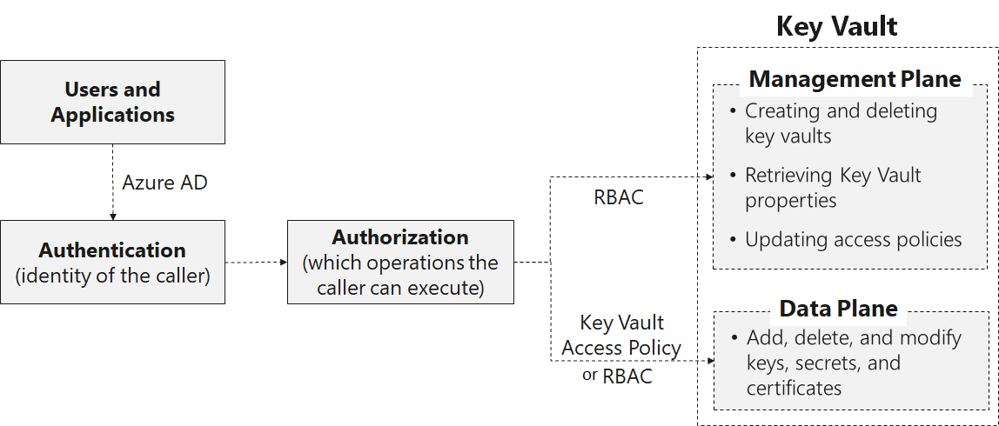
To access a key vault in either plane, all callers (users or applications) must have proper authentication and authorization. Authentication establishes the identity of the caller. Authorization determines which operations the caller can execute.
Both planes use Azure AD for authentication. For authorization, the management plane uses RBAC, and the data plane can use either newly added RBAC or a Key Vault access policy.
Active Directory authentication
When you create a key vault in an Azure subscription, its automatically associated with the Azure AD tenant of the subscription. All callers in both planes must register in this tenant and authenticate to access the key vault. In both cases, applications can access Key Vault in two ways:
- User plus application access. The application accesses Key Vault on behalf of a signed-in user. Examples of this type of access include Azure PowerShell and the Azure portal. User access is granted in two ways. They can either access Key Vault from any application, or they must use a specific application (referred to as compound identity).
- Application-only access. The application runs as a daemon service or background job. The application identity is granted access to the key vault.
For both types of access, the application authenticates with Azure AD. The application uses any supported authentication method based on the application type. The application acquires a token for a resource in the plane to grant access. The resource is an endpoint in the management or data plane, based on the Azure environment. The application uses the token and sends a REST API request to Key Vault. To learn more, review the whole authentication flow.
Benefits
The model of a single mechanism for authentication to both planes has several benefits:
- Organizations can centrally control access to all key vaults in their organization.
- If a user leaves, they instantly lose access to all key vaults in the organization.
- Organizations can customize authentication by using the options in Azure AD, such as to enable multifactor authentication for added security.
Review a secure Key Vault example
In this example, we're developing an application that uses a certificate for SSL, Azure Storage to store data, and an RSA 2,048-bit key for sign operations. Our application runs in an Azure virtual machine (VM) (or a virtual machine scale set). We can use a key vault to store the application secrets. We can store the bootstrap certificate that's used by the application to authenticate with Azure AD.
We need access to the following stored keys and secrets:
- SSL certificate - Used for SSL.
- Storage key - Used to access the Storage account.
- RSA 2,048-bit key - Used for sign operations.
- Bootstrap certificate - Used to authenticate with Azure AD. After access is granted, we can fetch the storage key and use the RSA key for signing.
We need to define the following roles to specify who can manage, deploy, and audit our application:
- Security team - IT staff from the office of the CSO (Chief Security Officer) or similar contributors. The security team is responsible for the proper safekeeping of secrets. The secrets can include SSL certificates, RSA keys for signing, connection strings, and storage account keys.
- Developers and operators - The staff who develop the application and deploy it in Azure. The members of this team aren't part of the security staff. They shouldn't have access to sensitive data like SSL certificates and RSA keys. Only the application that they deploy should have access to sensitive data.
- Auditors - This role is for contributors who aren't members of the development or general IT staff. They review the use and maintenance of certificates, keys, and secrets to ensure compliance with security standards.
There is another role that is outside the scope of our application: the subscription (or resource group) administrator. The subscription admin sets up initial access permissions for the security team. They grant access to the security team by using a resource group that has the resources required by the application.
Security team
- Create key vaults.
- Turn on Key Vault logging.
- Add keys and secrets.
- Create backups of keys for disaster recovery.
- Set Key Vault access policies to grant permissions to users and applications for specific operations.
- Roll the keys and secrets periodically.
Developers and operators
- Get references from the security team for the bootstrap and SSL certificates (thumbprints), storage key (secret URI), and RSA key (key URI) for signing.
- Develop and deploy the application to access keys and secrets programmatically.
Auditors
- Review the Key Vault logs to confirm proper use of keys and secrets, and compliance with data security standards.
The following table summarizes the access permissions for our roles and application.
| Role | Management plane permissions | Data plane permissions |
|---|---|---|
| Security team | Key Vault Contributor | Keys: backup, create, delete, get, import, list, restore. Secrets: all operations |
| Developers and operators | Key Vault deploy permission Note: This permission allows deployed VMs to fetch secrets from a key vault. | None |
| Auditors | None | Keys: list Secrets: list. Note: This permission enables auditors to inspect attributes (tags, activation dates, expiration dates) for keys and secrets not emitted in the logs. |
| Application | None | Keys: sign Secrets: get |
The three team roles need access to other resources along with Key Vault permissions. To deploy VMs (or the Web Apps feature of Azure App Service), developers and operators need Contributor access to those resource types. Auditors need read access to the Storage account where the Key Vault logs are stored.
Deploy and manage Key Vault certificates
Key Vault certificates support provides for management of your x509 certificates and enables:
- A certificate owner to create a certificate through a Key Vault creation process or through the import of an existing certificate. Includes both self-signed and CA-generated certificates.
- A Key Vault certificate owner to implement secure storage and management of X509 certificates without interaction with private key material.
- A certificate owner to create a policy that directs Key Vault to manage the life-cycle of a certificate.
- Certificate owners to provide contact information for notification about lifecycle events of expiration and renewal of certificate.
- Automatic renewal with selected issuers - Key Vault partner X509 certificate providers and CAs.
When a Key Vault certificate is created, an addressable key and secret are also created with the same name. The Key Vault key allows key operations and the Key Vault secret allows retrieval of the certificate value as a secret. A Key Vault certificate also contains public x509 certificate metadata.
The identifier and version of certificates is similar to that of keys and secrets. A specific version of an addressable key and secret created with the Key Vault certificate version is available in the Key Vault certificate response.

When a Key Vault certificate is created, it can be retrieved from the addressable secret with the private key in either PFX or PEM format. However, the policy used to create the certificate must indicate that the key is exportable. If the policy indicates non-exportable, then the private key isn't a part of the value when retrieved as a secret.
The addressable key becomes more relevant with non-exportable Key Vault certificates. The addressable Key Vault key’s operations are mapped from the keyusage field of the Key Vault certificate policy used to create the Key Vault certificate. If a Key Vault certificate expires, it’s addressable key and secret become inoperable.
Two types of key are supported – RSA or RSA HSM with certificates. Exportable is only allowed with RSA, and is not supported by RSA HSM.
Certificate policy
A certificate policy contains information on how to create and manage the Key Vault certificate lifecycle. When a certificate with private key is imported into the Key Vault, a default policy is created by reading the x509 certificate.
When a Key Vault certificate is created from scratch, a policy needs to be supplied. This policy specifies how to create the Key Vault certificate version, or the next Key Vault certificate version. After a policy has been established, it’s not required with successive create operations for future versions. There's only one instance of a policy for all the versions of a Key Vault certificate.
At a high level, a certificate policy contains the following information:
- X509 certificate properties. Contains subject name, subject alternate names, and other properties used to create an x509 certificate request.
- Key Properties. Contains key type, key length, exportable, and reuse key fields. These fields instruct key vault on how to generate a key.
- Secret properties. Contains secret properties such as content type of addressable secret to generate the secret value, for retrieving certificate as a secret.
- Lifetime Actions. Contains lifetime actions for the Key Vault certificate. Each lifetime action contains:
- Trigger, which specifies via days before expiry or lifetime span percentage.
- Action, which specifies the action type: emailContacts, or autoRenew.
- Issuer: Contains the parameters about the certificate issuer to use to issue x509 certificates.
- Policy attributes: Contains attributes associated with the policy.
Certificate Issuer Before you can create a certificate issuer in a Key Vault, the following two prerequisite steps must be completed successfully:
- Onboard to CA providers:
- An organization administrator must onboard their company with at least one CA provider.
- Admin creates requester credentials for Key Vault to enroll (and renew) SSL certificates:
- Provides the configuration to be used to create an issuer object of the provider in the key vault.
Certificate contacts Certificate contacts contain contact information to send notifications triggered by certificate lifetime events. The contacts information is shared by all the certificates in the key vault. A notification is sent to all the specified contacts for an event for any certificate in the key vault.
If a certificate's policy is set to auto renewal, then a notification is sent for the following events:
- Before certificate renewal
- After certificate renewal, and stating if the certificate was successfully renewed, or if there was an error, requiring manual renewal of the certificate
- When it’s time to renew a certificate for a certificate policy that is set to manually renew (email only)
Certificate access control The Key Vault that contains certificates manages access control for those same certificates. The access control policy for certificates is distinct from the access control policies for keys and secrets in the same Key Vault. Users might create one or more vaults to hold certificates, to maintain scenario appropriate segmentation and management of certificates.
The following permissions closely mirror the operations allowed on a secret object, and can be used on a per-principal basis in the secrets access control entry on a key vault:
- Permissions for certificate management operations:
- get: Get the current certificate version, or any version of a certificate.
- list: List the current certificates, or versions of a certificate.
- update: Update a certificate.
- create: Create a Key Vault certificate.
- import: Import certificate material into a Key Vault certificate.
- delete: Delete a certificate, its policy, and all of its versions.
- recover: Recover a deleted certificate.
- backup: Back up a certificate in a key vault.
- restore: Restore a backed-up certificate to a key vault.
- managecontacts: Manage Key Vault certificate contacts.
- manageissuers: Manage Key Vault certificate authorities/issuers.
- getissuers: Get a certificate's authorities/issuers.
- listissuers: List a certificate's authorities/issuers.
- setissuers: Create or update a Key Vault certificate's authorities/issuers.
- deleteissuers: Delete a Key Vault certificate's authorities/issuers.
- Permissions for privileged operations:
- purge: Purge (permanently delete) a deleted certificate.
Create Key Vault keys
Cryptographic keys in Key Vault are represented as JSON Web Key (JWK) objects. There are two types of keys, depending on how they were created.
- Soft keys: A key processed in software by Key Vault, but is encrypted at rest using a system key that is in a Hardware Security Module (HSM). Clients may import an existing RSA or EC (Elliptic Curve) key, or request that Key Vault generates one.
- Hard keys: A key processed in an HSM (Hardware Security Module). These keys are protected in one of the Key Vault HSM Security Worlds (there's one Security World per geography to maintain isolation). Clients may import an RSA or EC key, in soft form or by exporting from a compatible HSM device. Clients may also request Key Vault to generate a key.
Key operations Key Vault supports many operations on key objects. Here are a few:
- Create: Allows a client to create a key in Key Vault. The value of the key is generated by Key Vault and stored, and isn't released to the client. Asymmetric keys may be created in Key Vault.
- Import: Allows a client to import an existing key to Key Vault. Asymmetric keys may be imported to Key Vault using many different packaging methods within a JWK construct.
- Update: Allows a client with sufficient permissions to modify the metadata (key attributes) associated with a key previously stored within Key Vault.
- Delete: Allows a client with sufficient permissions to delete a key from Key Vault
Cryptographic operations Once a key has been created in Key Vault, the following cryptographic operations may be performed using the key. For best application performance, verify that operations are performed locally.
- Sign and Verify: Strictly, this operation is "sign hash" or "verify hash", as Key Vault doesn't support hashing of content as part of signature creation. Applications should hash the data to be signed locally, then request that Key Vault signs the hash. Verification of signed hashes is supported as a convenience operation for applications that may not have access to [public] key material.
- Key Encryption / Wrapping: A key stored in Key Vault may be used to protect another key, typically a symmetric content encryption key (CEK). When the key in Key Vault is asymmetric, key encryption is used. When the key in Key Vault is symmetric, key wrapping is used.
- Encrypt and Decrypt: A key stored in Key Vault may be used to encrypt or decrypt a single block of data. The size of the block is determined using the key type and selected encryption algorithm. The Encrypt operation is provided for convenience, for applications that may not have access to [public] key material.
Application services plan More organizations are adopting secrets management policies, where secrets are stored centrally with expectations around expiration and access control. Azure Key Vault provides these management capabilities to your applications in Azure, but some applications can’t easily take on code changes to start integrating with it. Key Vault references are a way to introduce secrets management into your app without code changes.
Apps hosted in App Service and Azure Functions can now define a reference to a secret managed in Key Vault as part of their application settings. The app’s system-assigned identity is used to securely fetch the secret and make it available to the app as an environment variable. Teams can replace existing secrets stored in app settings with references to the same secret in Key Vault, and the app continues to operate as normal.
Configure a hardware security module key-generation solution For added assurance, when you use Azure Key Vault, you can import or generate keys in hardware security modules (HSMs) that never leave the HSM boundary. This scenario is often referred to as Bring Your Own Key (BYOK). The HSMs are FIPS 140-2 Level 2 validated. Azure Key Vault uses Thales nShield family of HSMs to protect your keys. (This functionality isn't available for Azure China.)
Generating and transferring an HSM-protected key over the Internet:
- You generate the key from an offline workstation, which reduces the attack surface.
- The key is encrypted with a Key Exchange Key (KEK), which stays encrypted until transferred to the Azure Key Vault HSMs. Only the encrypted version of your key leaves the original workstation.
- The toolset sets properties on your tenant key that binds your key to the Azure Key Vault security world. After the Azure Key Vault HSMs receive and decrypt your key, only these HSMs can use it. Your key can't be exported. This binding is enforced using the Thales HSMs.
- The KEK that encrypts your key is generated inside the Azure Key Vault HSMs, and isn't exportable. The HSMs enforce that there can be no clear version of the KEK outside the HSMs. In addition, the toolset includes attestation from Thales that the KEK isn't exportable and was generated inside a genuine HSM manufactured by Thales.
- The toolset includes attestation from Thales that the Azure Key Vault security world was also generated on a genuine HSM manufactured by Thales.
- Microsoft uses separate KEKs and separate security worlds in each geographical region. This separation ensures that your key can be used only in data centers in the region in which you encrypted it. For example, a key from a European customer can't be used in data centers in North American or Asia.
Manage customer managed keys Once you have created your Key Vault and have populated it with keys and secrets. The next step is to set up a rotation strategy for the values you store as Key Vault secrets. Secrets can be rotated in several ways:
- As part of a manual process
- Programmatically by using REST API calls
- Through an Azure Automation script
Example of storage service encryption with customer-managed Keys.
This service uses Azure Key Vault that provides highly available and scalable secure storage for RSA cryptographic keys backed by FIPS 140-2 Level 2 validated HSMs (Hardware Security Modules). Key Vault streamlines the key management process and enables customers to maintain control of keys that are used to encrypt data, manage, and audit their key usage, in order to protect sensitive data as part of their regulatory or compliance needs, HIPAA and BAA compliant.

Customers can generate/import their RSA key to Azure Key Vault and enable Storage Service Encryption. Azure Storage handles the encryption and decryption in a fully transparent fashion using envelope encryption in which data is encrypted using an AES-based key, which in turn is protected using the Customer-Managed Key stored in Azure Key Vault.
Customers can rotate their key in Azure Key Vault as per their compliance policies. When they rotate their key, Azure Storage detects the new key version and re-encrypts the Account Encryption Key for that storage account. Key rotation doesn't result in re-encryption of all data and there's no other action required from user.
Customers can also revoke access to the storage account by revoking access on their key in Azure Key Vault. There are several ways to revoke access to your keys. Revoking access effectively blocks access to all blobs in the storage account as the Account Encryption Key is inaccessible by Azure Storage.
Customers can enable this feature on all available redundancy types of Azure Blob storage including premium storage and can toggle from using Microsoft managed to using customer-managed keys. There's no extra charge for enabling this feature.
You can enable this feature on any Azure Resource Manager storage account using the Azure portal, Azure PowerShell, Azure CLI, or the Microsoft Azure Storage Resource Provider API.
Enable Key Vault secrets Key Vault provides secure storage of secrets, such as passwords and database connection strings.
From a developer's perspective, Key Vault APIs accept and return secret values as strings. Internally, Key Vault stores and manages secrets as sequences of octets (8-bit bytes), with a maximum size of 25k bytes each. The Key Vault service doesn't provide semantics for secrets. It merely accepts the data, encrypts it, stores it, and returns a secret identifier ("ID"). The identifier can be used to retrieve the secret at a later time.
For highly sensitive data, clients should consider additional layers of protection for data. Encrypting data using a separate protection key prior to storage in Key Vault is one example.
Key Vault also supports a contentType field for secrets. Clients may specify the content type of a secret to assist in interpreting the secret data when it's retrieved. The maximum length of this field is 255 characters. There are no pre-defined values. The suggested usage is as a hint for interpreting the secret data. For instance, an implementation may store both passwords and certificates as secrets, then use this field to differentiate. There are no predefined values.

As shown above, the values for Key Vault Secrets are:
- Name-value pair - Name must be unique in the Vault
- Value can be any Unicode Transformation Format (UTF-8) string - max of 25 KB in size
- Manual or certificate creation
- Activation date
- Expiration date
Encryption All secrets in your Key Vault are stored encrypted. Key Vault encrypts secrets at rest with a hierarchy of encryption keys, with all keys in that hierarchy are protected by modules that are Federal Information Processing Standards (FIPS) 140-2 compliant. This encryption is transparent, and requires no action from the user. The Azure Key Vault service encrypts your secrets when you add them, and decrypts them automatically when you read them.
The encryption leaf key of the key hierarchy is unique to each key vault. The encryption root key of the key hierarchy is unique to the security world, and its protection level varies between regions:
- China: root key is protected by a module that is validated for FIPS 140-2 Level 1.
- Other regions: root key is protected by a module that is validated for FIPS 140-2 Level 2 or higher.
Secret attributes In addition to the secret data, the following attributes may be specified:
- exp: IntDate, optional, default is forever. The exp (expiration time) attribute identifies the expiration time on or after which the secret data SHOULD NOT be retrieved, except in particular situations. This field is for informational purposes only as it informs users of key vault service that a particular secret may not be used. Its value MUST be a number containing an IntDate value.
- nbf: IntDate, optional, default is now. The nbf (not before) attribute identifies the time before which the secret data SHOULD NOT be retrieved, except in particular situations. This field is for informational purposes only. Its value MUST be a number containing an IntDate value.
- enabled: boolean, optional, default is true. This attribute specifies whether the secret data can be retrieved. The enabled attribute is used with nbf and exp when an operation occurs between nbf and exp, it will only be permitted if enabled is set to true. Operations outside the nbf and exp window are automatically disallowed, except in particular situations.
There are more read-only attributes that are included in any response that includes secret attributes:
- created: IntDate, optional. The created attribute indicates when this version of the secret was created. This value is null for secrets created prior to the addition of this attribute. Its value must be a number containing an IntDate value.
- updated: IntDate, optional. The updated attribute indicates when this version of the secret was updated. This value is null for secrets that were last updated prior to the addition of this attribute. Its value must be a number containing an IntDate value.
For information on common attributes for each key vault object type, see Azure Key Vault keys, secrets and certificates overview.
Date-time controlled operations A secret's get operation will work for not-yet-valid and expired secrets, outside the nbf / exp window. Calling a secret's get operation, for a not-yet-valid secret, can be used for test purposes. Retrieving (getting) an expired secret, can be used for recovery operations.
Secret access control Access Control for secrets managed in Key Vault, is provided at the level of the Key Vault that contains those secrets. The access control policy for secrets is distinct from the access control policy for keys in the same Key Vault. Users may create one or more vaults to hold secrets, and are required to maintain scenario appropriate segmentation and management of secrets.
The following permissions can be used, on a per-principal basis, in the secrets access control entry on a vault, and closely mirror the operations allowed on a secret object:
-
Permissions for secret management operations
- get: Read a secret
- list: List the secrets or versions of a secret stored in a Key Vault
- set: Create a secret
- delete: Delete a secret
- recover: Recover a deleted secret
- backup: Back up a secret in a key vault
- restore: Restore a backed up secret to a key vault
-
Permissions for privileged operations
- purge: Purge (permanently delete) a deleted secret
Secret tags You can specify more application-specific metadata in the form of tags. Key Vault supports up to 15 tags, each of which can have a 256 character name and a 256 character value.
Note
Tags are readable by a caller if they have the list or get permission.
Usage Scenarios
| When to use | Examples |
|---|---|
| Securely store, manage lifecycle, and monitor credentials for service-to-service communication like passwords, access keys, service principal client secrets. | Use Azure Key Vault with a Virtual MachineUse Azure Key Vault with an Azure Web Application |
Configure key rotation Once you have keys and secrets stored in the key vault it's important to think about a rotation strategy. There are several ways to rotate the values:
- As part of a manual process
- Programmatically by using API calls
- Through an Azure Automation script
This diagram shows how Event Grid and Function Apps can be used to automate the process.

- Thirty days before the expiration date of a secret, Key Vault publishes the "near expiry" event to Event Grid.
- Event Grid checks the event subscriptions and uses HTTP POST to call the function app endpoint subscribed to the event.
- The function app receives the secret information, generates a new random password, and creates a new version for the secret with the new password in Key Vault.
- The function app updates SQL Server with the new password.
Manage Key Vault safety and recovery features Key Vault's soft-delete feature allows recovery of the deleted vaults and deleted key vault objects (for example, keys, secrets, certificates), known as soft-delete. Specifically, we address the following scenarios: This safeguard offer the following protections:
- Once a secret, key, certificate, or key vault is deleted, it remains recoverable for a configurable period of 7 to 90 calendar days. If no configuration is specified, the default recovery period is set to 90 days. Users are provided with sufficient time to notice an accidental secret deletion and respond.
- Two operations must be made to permanently delete a secret. First a user must delete the object, which puts it into the soft-deleted state. Second, a user must purge the object in the soft-deleted state. The purge operation requires extra access policy permissions. These extra protections reduce the risk of a user accidentally or maliciously deleting a secret or a key vault.
- To purge a secret in the soft-deleted state, a service principal must be granted another "purge" access policy permission. The purge access policy permission isn't granted by default to any service principal including key vault and subscription owners and must be deliberately set. By requiring an elevated access policy permission to purge a soft-deleted secret, it reduces the probability of accidentally deleting a secret.
Supporting interfaces The soft-delete feature is available through the REST API, the Azure CLI, PowerShell, .NET/C# interfaces, and ARM templates.
Scenarios Azure Key Vaults are tracked resources, managed by Azure Resource Manager. Azure Resource Manager also specifies a well-defined behavior for deletion, which requires that a successful DELETE operation must result in that resource not being accessible anymore. The soft-delete feature addresses the recovery of the deleted object, whether the deletion was accidental or intentional.
- In the typical scenario, a user may have inadvertently deleted a key vault or a key vault object. If that key vault or key vault object were to be recoverable for a predetermined period, the user may undo the deletion and recover their data.
- In a different scenario, a rogue user may attempt to delete a key vault or a key vault object, such as a key inside a vault, to cause a business disruption. Separation and deletion of the key vault or key vault object from the actual deletion of the underlying data can be used as a safety measure by, for instance, restricting permissions on data deletion to a different, trusted role. This approach effectively requires quorum for an operation that might otherwise result in an immediate data loss.
Soft-delete behavior When soft-delete is enabled, resources marked as deleted resources are retained for a specified period (90 days by default). The service further provides a mechanism for recovering the deleted object, essentially undoing the deletion.
When creating a new key vault, soft-delete is on by default. Once soft-delete is enabled on a key vault, it can't be disabled.
The default retention period is 90 days but, during key vault creation, it's possible to set the retention policy interval to a value from 7 to 90 days through the Azure portal. The purge protection retention policy uses the same interval. Once set, the retention policy interval can't be changed.
You can't reuse the name of a key vault that has been soft-deleted until the retention period has passed.
Purge protection Permanently deleting, purging, a key vault is possible via a POST operation on the proxy resource and requires special privileges. Generally, only the subscription owner is able to purge a key vault. The POST operation triggers the immediate and irrecoverable deletion of that vault.
Exceptions are:
- When the Azure subscription has been marked as undeletable. In this case, only the service may then perform the actual deletion, and does so as a scheduled process.
- When the enable-purge-protection argument is enabled on the vault itself. In this case, Key Vault waits for 90 days from when the original secret object was marked for deletion to permanently delete the object.
Key vault recovery Upon deleting a key vault object, such as a key, the service will place the object in a deleted state, making it inaccessible to any retrieval operations. While in this state, the key vault object can only be listed, recovered, or forcefully/permanently deleted. To view the objects, use the Azure CLI az keyvault key list-deleted command, or the PowerShell Get-AzKeyVault -InRemovedState command.
At the same time, Key Vault will schedule the deletion of the underlying data corresponding to the deleted key vault or key vault object for execution after a predetermined retention interval. The DNS record corresponding to the vault is also retained during the retention interval.
Soft-delete retention period Soft-deleted resources are retained for a set period of time, 90 days. During the soft-delete retention interval, the following apply:
- You may list all of the key vaults and key vault objects in the soft-delete state for your subscription as well as access deletion and recovery information about them.
- Only users with special permissions can list deleted vaults. We recommend that our users create a custom role with these special permissions for handling deleted vaults.
- A key vault with the same name can't be created in the same location; correspondingly, a key vault object can't be created in a given vault if that key vault contains an object with the same name and which is in a deleted state.
- Only a privileged user may restore a key vault or key vault object by issuing a recover command on the corresponding proxy resource.
- The user, member of the custom role, who has the privilege to create a key vault under the resource group can restore the vault.
- Only a privileged user may forcibly delete a key vault or key vault object by issuing a delete command on the corresponding proxy resource.
Unless a key vault or key vault object is recovered, at the end of the retention interval the service performs a purge of the soft-deleted key vault or key vault object and its content. Resource deletion may not be rescheduled.
Billing implications In general, when an object (a key vault or a key or a secret) is in deleted state, there are only two operations possible: 'purge' and 'recover'. All the other operations fail. Therefore, even though the object exists, no operations can be performed and hence no usage will occur, so no bill. However there are following exceptions:
- In general, when an object (a key vault or a key or a secret) is in deleted state, there are only two operations possible: 'purge' and 'recover'. All the other operations fail. Therefore, even though the object exists, no operations can be performed and hence no usage will occur, so no bill. However there are following exceptions:
- If the object is an HSM-key, the 'HSM Protected key' charge per key version per month charge applies if a key version has been used in last 30 days. After that, since the object is in deleted state no operations can be performed against it, so no charge will apply.
Key vault soft-delete on by default If a secret is deleted and the key vault doesn't have soft-deleted protection, it's deleted permanently. Although users can currently opt out of soft-delete during key vault creation, this ability is deprecated. In February 2025, Microsoft enables soft-delete protection on all key vaults, and users are no longer be able to opt out of or turn off soft-delete. This, protect secrets from accidental or malicious deletion by a user.
This diagram shows how the process flow of deleting a key with and without soft-delete protection.

When a secret is deleted from a key vault without soft-delete protection, the secret is permanently deleted. Users can currently opt out of soft-delete during key vault creation. However, Microsoft enables soft-delete protection on all key vaults to protect secrets from accidental or malicious deletion by a user. Users are no longer be able to opt out of or turn off soft-delete.
Key vault backup Azure Key Vault automatically provides features to help you maintain availability and prevent data loss. Back up secrets only if you have a critical business justification. Backing up secrets in your key vault may introduce operational challenges such as maintaining multiple sets of logs, permissions, and backups when secrets expire or rotate.
Key Vault maintains availability in disaster scenarios and will automatically fail over requests to a paired region without any intervention from a user.
If you want protection against accidental or malicious deletion of your secrets, configure soft-delete and purge protection features on your key vault.
Limitations
Important
Key Vault does not support the ability to backup more than 500 past versions of a key, secret, or certificate object. Attempting to backup a key, secret, or certificate object may result in an error. It is not possible to delete previous versions of a key, secret, or certificate.
Key Vault doesn't currently provide a way to back up an entire key vault in a single operation. Any attempt to use the commands listed in this document to do an automated backup of a key vault may result in errors and not supported by Microsoft or the Azure Key Vault team.
Also consider the following consequences:
- Backing up secrets that have multiple versions might cause time-out errors.
- A backup creates a point-in-time snapshot. Secrets might renew during a backup, causing a mismatch of encryption keys.
- If you exceed key vault service limits for requests per second, your key vault is throttled, and the backup fails.
Design considerations When you back up a key vault object, such as a secret, key, or certificate, the backup operation downloads the object as an encrypted blob. This blob can't be decrypted outside of Azure. To get usable data from this blob, you must restore the blob into a key vault within the same Azure subscription and Azure geography.
Prerequisites To back up a key vault object, you must have:
- Contributor-level or higher permissions on an Azure subscription.
- A primary key vault that contains the secrets you want to back up.
- A secondary key vault where secrets are restored.
Back up and restore from the Azure portal
Back up 1. Navigate to the Azure portal. 2. Select your key vault. 3. Navigate to the key you want to back up.

- Select the object
- Select Download Back up
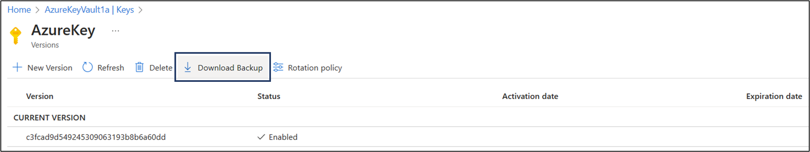
-
Select Download 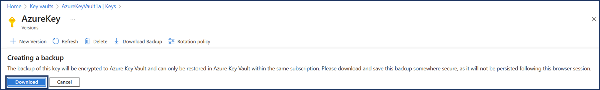
-
Store the encrypted blob in a secure location.
Restore 1. Navigate to the Azure portal. 2. Select your key vault. 3. Navigate to the key you want to restore. 4. Select Restore Backup.

- Navigate to the location where you stored the encrypted blob.
- Select OK.
Perform Try-This exercises
Task 1: Create a key vault
In this task, we'll create a key vault.
- Sign in to the Azure portal and search for Key Vaults.
- On the Key vaults page, click + Create.
-
On the Basics tab, fill out the required information.
- Discuss the Pricing tier selections, Standard and Premium. Premium supports HSM-backed keys.
- Discuss Soft delete and Retention period.
- Click Review and Create and then Create.
- Wait for the new key vault to be created, or move to a key vault that has already been created.
Task 2: Review key vault settings
In this task, we'll review key vault settings.
- In the Portal, navigate to the key vault.
- Under the Name list, click the newly created Key Vault.
- Under the Objects, click Keys.
- Click Generate/Import and review the Keys configuration information.
- Under Settings, click Secrets.
- Click Generate/Import, review the Secrets configuration information, and click Create.
- View the new Secret and note that keys support versioning.
- Under Settings, click Certificates.
- Click Generate/Import and review the Certificates configuration information.
Task 3: Configure access policies
Note
To complete this demonstration you will need a non-privileged test user.
In this task, we'll configure access policies and test access.
- Continue in the Portal with your key vault.
- Under Settings, click Access Policies.
- Review the Enable access to choices: Azure Virtual Machines for deployment, Azure Resource Manager for template deployment, and Azure Disk Encryption for volume encryption.
- Review the creator account Key Permissions. Note the Cryptographic operation permissions aren't assigned.
- Review the creator account Secret Permissions. Note the Purge permission.
- Review the creator account Certificate Permissions.
- Open the Cloud Shell with the Bash option. You should be signed in as a Global Administrator.
- Use your key information to verify the secret you created in the previous task displays successfully for this role.
az keyvault secret show --name <secret_name> --vault-name <keyvault_name>' - In another browser tab, open the portal, and sign-in as the test user.
- Open the Cloud Shell with the Bash option.
- Verify that the secret doesn't display for the test user. Access is denied.
az keyvault secret show --name <secret_name> --vault-name <keyvault_name> - Return to the Global Administrator account in the portal.
- Add the Key Vault Contributor role to your test user.
- Try the test user's access. Access is denied.
az keyvault secret show --name <secret_name> --vault-name <keyvault_name> - Explain that adding the RBAC role grants access to the Key Vault control plane. It doesn't grant access to the date in the Key Vault.
- Return to your Key Vault and create an access policy.
-
Under Settings, select Access policies and then Add Access Policy.
- Configure from the template (optional): Key, Secret, & Certificate Management
- Key permissions: none
- Secret permissions: Get, List
- Certificate permissions: none
- Select principal: select your test user
- Be sure to Add your new access policy. And to Save your changes.
- Try the test user's access. The user should now have access and the key should display.
az keyvault secret show --name <secret_name> --vault-name <keyvault_name> - As you have time, return to the Secret configuration settings and change Enabled to No. Be sure to save your changes, then try access the key again.
Explore the Azure Hardware Security Module Azure Dedicated HSM is an Azure service that provides cryptographic key storage in Azure. Dedicated HSM meets the most stringent security requirements. It's the ideal solution for customers who require FIPS 140-2 Level 3-validated devices and complete and exclusive control of the HSM appliance.
Best fit Azure Dedicated HSM is most suitable for “lift-and-shift” scenarios that require direct and sole access to HSM devices. Examples include:
- Migrating applications from on-premises to Azure Virtual Machines
- Migrating applications from Amazon AWS EC2 to virtual machines that use the AWS Cloud HSM Classic service
- Running shrink-wrapped software such as Apache/Ngnix SSL Offload, Oracle TDE, and ADCS in Azure Virtual Machines
Not a fit Azure Dedicated HSM is not a good fit for the following type of scenario: Microsoft cloud services that support encryption with customer-managed keys (such as Azure Information Protection, Azure Disk Encryption, Azure Data Lake Store, Azure Storage, Azure SQL Database, and Customer Key for Office 365) that are not integrated with Azure Dedicated HSM.
Knowledge check
-
Which of the following items should be stored in Azure Key Vault?
-
Secret (Ans)
- Links to external certificate
-
Identity management
-
A select group of users must be able to create and delete keys in the key vault. When authenticating to the data plane using Azure AD, what security tool should be used the authorize access at a role level to these users?
-
Key vault access policies
- Role-based Access Control (Ans)
-
Azure AD authentication
-
Which of these statements best describes Azure Key Vault's authentication and authorization process?
-
Applications authenticate to a vault with the lead developer’s username and password and have full access to all secrets in the vault.
- Applications and users authenticate to a vault with their Azure Active Directory identities and are authorized to perform actions on all secrets in the vault. (Ans)
-
Applications and users authenticate to a vault with a Microsoft account and are authorized to access specific secrets.
-
How does Azure Key Vault help protect your secrets after they're loaded by your app?
-
Azure Key Vault automatically generates a new secret after every use.
- Azure Key Vault double-encrypts secrets, requiring your app to decrypt them locally every time they're used.
-
It doesn't protect your secrets. Secrets are unprotected once they're loaded by your application. (Ans)
-
A manager wants to know more about software-protected keys and hardware-protected keys. Pick the correct topic you could explain to your manager?
-
Only hardware-protected keys are encrypted at rest.
- Software-protected keys aren't isolated from the application.
- Software-protected cryptographic operations are performed in software and Hardware-protected cryptographic operations are performed within the HSM. (Ans)
Configure application security features
Introduction
Application security is one extra layer in the defense-in-depth strategy. You ensure that your application is registered, so it has a unique identity in Azure AD, then you can manage and control both access to the application and what the application can do.
Scenario A security engineer uses application security to protect the usage of your application and prevent the loss of data, you will work on such tasks as:
- Register applications with Azure AD.
- Assign permissions for the application and the users to access it.
- Use certificates and secrets to protect operations and data.
Review the Microsoft identity platform
Microsoft identity platform is an evolution of the Azure Active Directory (Azure AD) developer platform. It allows developers to build applications that sign in users, get tokens to call APIs, such as Microsoft Graph or APIs that developers have built. It consists of an authentication service, open-source libraries, application registration and configuration (through a developer portal and application API), full developer documentation, quickstart samples, code samples, tutorials, how-to guides, and other developer content. The Microsoft identity platform supports industry-standard protocols such as OAuth 2.0 and OpenID Connect.
Up until now, most developers have worked with the Azure AD v1.0 platform to authenticate work and school accounts (provisioned by Azure AD) by requesting tokens from the Azure AD v1.0 endpoint, using Azure AD Authentication Library (ADAL), Azure portal for application registration and configuration, and the Microsoft Graph API for programmatic application configuration.
With the unified Microsoft identity platform (v2.0), you can write code once and authenticate any Microsoft identity into your application. For several platforms, the fully supported open-source Microsoft Authentication Library (MSAL) is recommended for use against the identity platform endpoints. MSAL is simple to use, provides great single sign-on (SSO) experiences for your users, helps you achieve high reliability and performance, and is developed using Microsoft Secure Development Lifecycle (SDL). When calling APIs, you can configure your application to take advantage of incremental consent, which allows you to delay the request for consent for more invasive scopes until the application’s usage warrants this at runtime. MSAL also supports Azure Active Directory B2C, so your customers use their preferred social, enterprise, or local account identities to get single sign-on access to your applications and APIs.
With the Microsoft identity platform, one can expand their reach to these kinds of users:
- Work and school accounts (Azure AD provisioned accounts)
- Personal accounts (such as Outlook.com or Hotmail.com)
- Your customers who bring their own email or social identity (such as LinkedIn, Facebook, and Google) via MSAL and Azure AD business-to-consumer (B2C)
You can use the Azure portal to register and configure your application and use the Microsoft Graph API for programmatic application configuration.
Microsoft identity platform
The following diagram depicts the Microsoft identity experience at a high level, including the app registration experience, software development kits (SDKs), endpoints, and supported identities.
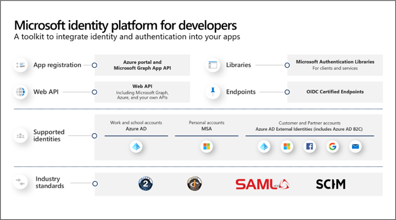
The Microsoft identity platform has two endpoints (v1.0 and v2.0); however, when developing a new application, consider it's highly recommended that you use the v2.0 (default) endpoint to benefit from the latest features and capabilities:
The Microsoft Authentication Library can be used in many application scenarios, including the following:
- Single-page applications (JavaScript)
- Web app signing in users
- Web application signing in a user and calling a web API on behalf of the user
- Protecting a web API so only authenticated users can access it
- Web API calling another downstream Web API on behalf of the signed-in user
- Desktop application calling a web API on behalf of the signed-in user
- Mobile application calling a web API on behalf of the user who's signed in interactively.
- Desktop/service daemon application calling web API on behalf of itself
Languages and frameworks
| Library | Supported platforms and frameworks |
|---|---|
| MSAL for Android | Android |
| MSAL Angular | Single-page apps with Angular and Angular.js frameworks |
| MSAL for iOS and macOS | iOS and macOS |
| MSAL Go (Preview) | Windows, macOS, Linux |
| MSAL Java | Windows, macOS, Linux |
| MSAL.js | JavaScript/TypeScript frameworks such as Vue.js, Ember.js, or Durandal.js |
| MSAL.NET | .NET Framework, .NET Core, Xamarin Android, Xamarin iOS, Universal Windows Platform |
| MSAL Node | Web apps with Express, desktop apps with Electron, Cross-platform console apps |
| MSAL Python | Windows, macOS, Linux |
| MSAL React | Single-page apps with React and React-based libraries (Next.js, Gatsby.js) |
Migrate apps that use ADAL to MSAL
Active Directory Authentication Library (ADAL) integrates with the Azure AD for developers (v1.0) endpoint, where MSAL integrates with the Microsoft identity platform. The v1.0 endpoint supports work accounts but not personal accounts. The v2.0 endpoint is unifying Microsoft personal accounts and works accounts into a single authentication system. Additionally, with MSAL, you can also get authentications for Azure AD B2C.
Explore Azure AD application scenarios
Any application that outsources authentication to Azure AD needs to be registered in a directory. This step involves telling Azure AD about your application, including:
Azure AD application scenarios
| Frontend | Authentication | Backend |
|---|---|---|
| Single page application are frontends that run in a browser | Azure AD Authorization Endpoint | Web API |
| Web apps are applications that authenticate a user in a web browser to a web application | Azure AD WS-Federation or SAML Endpoint | Web application |
| Native apps are applications that call a web API on behalf of a user | Azure AD Authorization Endpoint and Azure AD Token Endpoint | Web API |
| Web API apps are web applications that need to get resources from a web API | Azure AD Authorization Endpoint and Azure AD Token Endpoint | Web application and Web API |
| Service-to-service applications are daemon or server application that needs to get resources from a web API | Azure AD Authorization Endpoint and Azure AD Token Endpoint | Web API |
Azure AD represents applications following a specific model that's designed to fulfill two main functions:
- Identify the app according to the authentication protocols it supports. This involves enumerating all the identifiers, URLs, secrets, and related information that Azure AD needs at authentication time. Here, Azure AD:
- Holds all the data needed to support authentication at run time.
- Holds all the data for deciding which resources an app might need to access, whether it should fulfill a particular request, and under what circumstances it should fulfill the request.
- Supplies the infrastructure for implementing app provisioning both within the app developer's tenant and to any other Azure AD tenant.
- Handle user consent during token request time and facilitate the dynamic provisioning of apps across tenants. Here, Azure AD:
- Enables users and administrators to dynamically grant or deny consent for the app to access resources on their behalf.
- Enables administrators to ultimately decide what apps are allowed to do, which users can use specific apps, and how directory resources are accessed.
In Azure AD, an application object describes an application as an abstract entity. Developers work with applications. At deployment time, Azure AD uses a specific application object as a blueprint to create a service principal, which represents a concrete instance of an application within a directory or tenant. It's the service principal that defines what the app can do in a specific target directory, who can use it, what resources it has access to, and so on. Azure AD creates a service principal from an application object through consent.
The following diagram depicts a simplified Azure AD provisioning flow driven by consent.
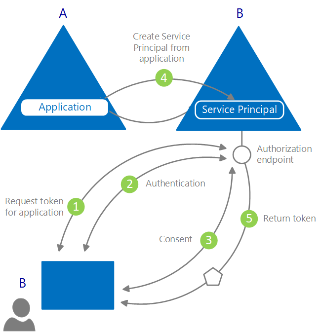
In this provisioning flow:
- A user from B tries to sign in with the app.
- Azure AD gets and verifies the user credentials.
- Azure AD prompts the user to consent for the app to gain access to tenant B.
- Azure AD uses the application object in A as a blueprint for creating a service principal in B.
- The user receives the requested token.
You can repeat this process as many times as you want for other tenants (C, D, and so on). Directory A keeps the blueprint for the app (application object). Users and admins of all the other tenants where the app is given consent to retain control over what the application can do through the corresponding service principal object in each tenant.
When an application is given permission to access resources in a tenant (upon registration or consent), a service principal object is created. The Microsoft Graph ServicePrincipal entity defines the schema for a service principal object's properties.
Register an application with App Registration For the most secure operation, register your app with the Microsoft identity platform.
Before your app can get a token from the Microsoft identity platform, it must be registered in the Azure portal. Registration integrates your app with the Microsoft identity platform and establishes the information that it uses to get tokens, including:
- Application ID: A unique identifier assigned by the Microsoft identity platform.
- Redirect URI/URL: One or more endpoints at which your app will receive responses from the Microsoft identity platform. (For native and mobile apps, this is a URI assigned by the Microsoft identity platform.)
- Application Secret: A password or a public/private key pair that your app uses to authenticate with the Microsoft identity platform. (Not needed for native or mobile apps.)
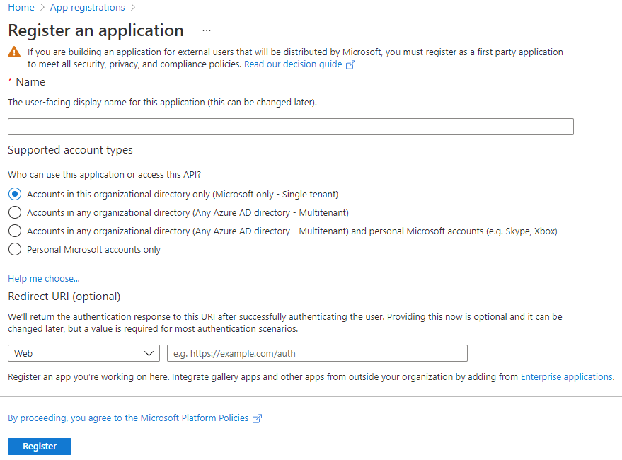
Getting an access token
Like most developers, you will probably use authentication libraries to manage your token interactions with the Microsoft identity platform. Authentication libraries abstract many protocol details, like validation, cookie handling, token caching, and maintaining secure connections, away from the developer and let you focus your development on your app. Microsoft publishes open-source client libraries and server middleware.
Configure Microsoft Graph permissions
Microsoft Graph exposes granular permissions that control the access that apps have to resources, like users, groups, and mail. As a developer, you decide which permissions to request for Microsoft Graph. When a user signs in to your app they, or, in some cases, an administrator, are given a chance to consent to these permissions. If the user consents, your app is given access to the resources and APIs that it has requested. For apps that don't take a signed-in user, permissions can be pre-consented to by an administrator when the app is installed.
Microsoft Graph has two types of permissions:
- Delegated permissions are used by apps that have a signed-in user present. For these apps, either the user or an administrator consents to the permissions that the app requests, and the app can act as the signed-in user when making calls to Microsoft Graph. Some delegated permissions can be consented by non-administrative users, but some higher-privileged permissions require administrator consent.
- Application permissions are used by apps that run without a signed-in user present; for example, apps that run as background services or daemons. Application permissions can only be consented by an administrator.
Effective permissions are the permissions that your app will have when making requests to Microsoft Graph. It is important to understand the difference between the delegated and application permissions that your app is granted and its effective permissions when making calls to Microsoft Graph.
For delegated permissions, the effective permissions of your app will be the intersection of the delegated permissions the app has been granted (via consent) and the privileges of the currently signed-in user. Your app can never have more privileges than the signed-in user. Within organizations, the privileges of the signed-in user can be determined by policy or by membership in one or more administrator roles.
For example, assume your app has been granted the User.ReadWrite.All delegated permission. This permission nominally grants your app permission to read and update the profile of every user in an organization. If the signed-in user is a global administrator, your app will be able to update the profile of every user in the organization. However, if the signed-in user is not in an administrator role, your app will be able to update only the profile of the signed-in user. It will not be able to update the profiles of other users in the organization because the user that it has permission to act on behalf of does not have those privileges. For application permissions, the effective permissions of your app will be the full level of privileges implied by the permission. For example, an app that has the User.ReadWrite.All application permission can update the profile of every user in the organization.
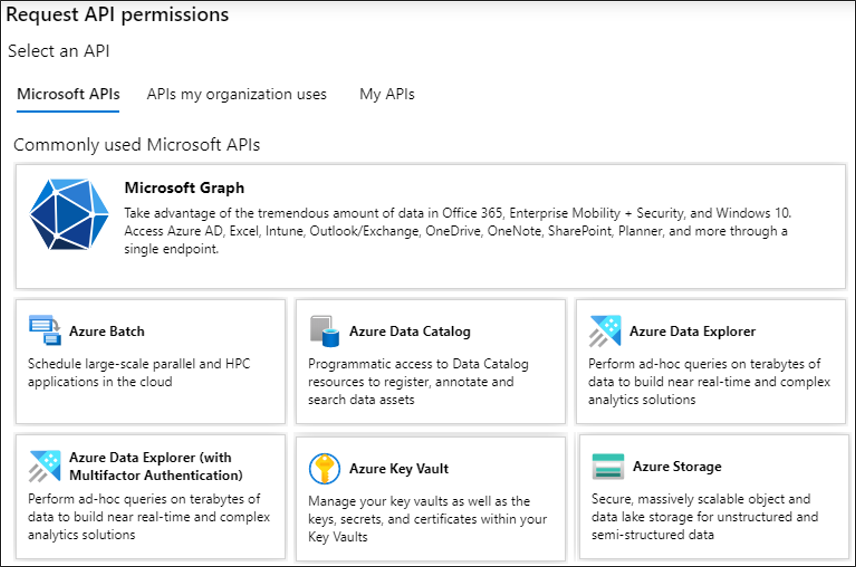
Microsoft Graph API
You can use the Microsoft Graph Security API to connect Microsoft security products, services, and partners to streamline security operations and improve threat protection, detection, and response capabilities. The Microsoft Graph Security API is an intermediary service (or broker) that provides a single programmatic interface to connect multiple Microsoft Graph Security providers (also called security providers or providers). The Microsoft Graph Security API federates requests to all providers in the Microsoft Graph Security ecosystem. This is based on the security provider consent provided by the application, as shown in the following diagram. The consent workflow only applies to non-Microsoft providers.
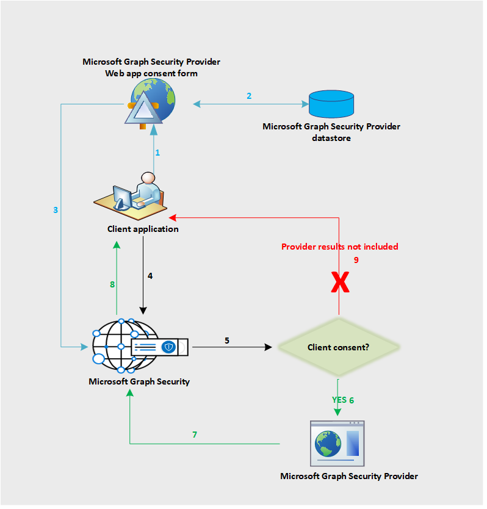
The following is a description of the flow:
- The application user signs in to the provider application to view the consent form from the provider. This consent form experience or UI is owned by the provider and applies to non-Microsoft providers only to get explicit consent from their customers to send requests to Microsoft Graph Security API.
- The client consent is stored on the provider side.
- The provider consent service calls the Microsoft Graph Security API to inform consent approval for the respective customer.
- The application sends a request to the Microsoft Graph Security API.
- The Microsoft Graph Security API checks for the consent information for this customer mapped to various providers.
- The Microsoft Graph Security API calls all those providers the customer has given explicit consent to via the provider consent experience.
- The response is returned from all the consented providers for that client.
- The result set response is returned to the application.
- If the customer has not consented to any provider, no results from those providers are included in the response.
The Microsoft Graph Security API makes it easy to connect with security solutions from Microsoft and partners. It allows you to more readily realize and enrich the value of these solutions. You can connect easily with the Microsoft Graph Security API by using one of the following approaches, depending on your requirements:
Why use the Microsoft Graph Security API?
- Write code – Find code samples in C#, Java, NodeJS, and more.
- Connect using scripts – Find PowerShell samples.
- Drag and drop into workflows and playbooks – Use Microsoft Graph Security connectors for Azure Logic Apps, Microsoft Flow, and PowerApps.
- Get data into reports and dashboards – Use the Microsoft Graph Security connector for Power BI.
- Connect using Jupyter notebooks – Find Jupyter notebook samples.
Unify and standardize alert tracking Connect once to integrate alerts from any Microsoft Graph-integrated security solution and keep alert status and assignments in sync across all solutions. You can also stream alerts to security information and event management (SIEM) solutions, such as Splunk using Microsoft Graph Security API connectors.
Correlate security alerts to improve threat protection and response Correlate alerts across security solutions more easily with a unified alert schema. This not only allows you to receive actionable alert information but allows security analysts to pivot and enrich alerts with asset and user information, enabling faster response to threats and asset protection.
Update alert tags, status, and assignments Tag alerts with additional context or threat intelligence to inform response and remediation. Ensure that comments and feedback on alerts are captured for visibility to all workflows. Keep alert status and assignments in sync so that all integrated solutions reflect the current state. Use webhook subscriptions to get notified of changes.
Unlock security context to drive investigation Dive deep into related security-relevant inventory (like users, hosts, and apps), then add organizational context from other Microsoft Graph providers (Azure AD, Microsoft Intune, Microsoft 365) to bring business and security contexts together and improve threat response.
Enable managed identities A common challenge when building cloud applications is how to manage the credentials in your code for authenticating to cloud services. Keeping the credentials secure is an important task. Ideally, the credentials never appear on developer workstations and aren't checked into source control. Azure Key Vault provides a way to securely store credentials, secrets, and other keys, but your code has to authenticate to Key Vault to retrieve them.
Managed Identities for Azure resources is the new name for the service formerly known as Managed Service Identity (MSI) for Azure resources feature in Azure Active Directory (Azure AD) solves the above noted problem. The feature provides Azure services with an automatically managed identity in Azure AD. You can use the identity to authenticate to any service that supports Azure AD authentication, including Key Vault, without any credentials in your code.
The managed identities for Azure resources feature is free with Azure AD for Azure subscriptions. There's no additional cost.
Terminology The following terms are used throughout the managed identities for Azure resources documentation set:
- Client ID - a unique identifier generated by Azure AD that is tied to an application and service principal during its initial provisioning.
- Principal ID - the object ID of the service principal object for your managed identity that is used to grant role-based access to an Azure resource.
- Azure Instance Metadata Service (IMDS) - a REST endpoint accessible to all IaaS VMs created via the Azure Resource Manager. The endpoint is available at a well-known non-routable IP address (169.254.169.254) that can be accessed only from within the VM.
How managed identities for Azure resources works There are two types of managed identities:
- A system-assigned managed identity is enabled directly on an Azure service instance. When the identity is enabled, Azure creates an identity for the instance in the Azure AD tenant that's trusted by the subscription of the instance. After the identity is created, the credentials are provisioned onto the instance. The lifecycle of a system-assigned identity is directly tied to the Azure service instance that it's enabled on. If the instance is deleted, Azure automatically cleans up the credentials and the identity in Azure AD.
- A user-assigned managed identity is created as a standalone Azure resource. Through a create process, Azure creates an identity in the Azure AD tenant that's trusted by the subscription in use. After the identity is created, the identity can be assigned to one or more Azure service instances. The lifecycle of a user-assigned identity is managed separately from the lifecycle of the Azure service instances to which it's assigned.
Internally, managed identities are service principals of a special type, which are locked to only be used with Azure resources. When the managed identity is deleted, the corresponding service principal is automatically removed. Also, when a User-Assigned or System-Assigned Identity is created, the Managed Identity Resource Provider (MSRP) issues a certificate internally to that identity.
Your code can use a managed identity to request access tokens for services that support Azure AD authentication. Azure takes care of rolling the credentials that are used by the service instance.
Credential rotation
Credential rotation is controlled by the resource provider that hosts the Azure resource. The default rotation of the credential occurs every 46 days. It's up to the resource provider to call for new credentials, so the resource provider could wait longer than 46 days.
The following diagram shows how managed service identities work with Azure virtual machines (VMs):
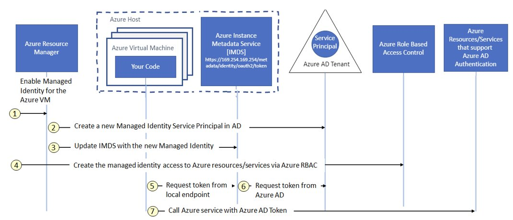
How a system-assigned managed identity works with an Azure VM
- Azure Resource Manager receives a request to enable the system-assigned managed identity on a VM.
- Azure Resource Manager creates a service principal in Azure AD for the identity of the VM. The service principal is created in the Azure AD tenant that's trusted by the subscription.
- Azure Resource Manager configures the identity on the VM by updating the Azure Instance Metadata Service identity endpoint with the service principal client ID and certificate.
- After the VM has an identity, use the service principal information to grant the VM access to Azure resources. To call Azure Resource Manager, use role-based access control (RBAC) in Azure AD to assign the appropriate role to the VM service principal. To call Key Vault, grant your code access to the specific secret or key in Key Vault.
-
Your code that's running on the VM can request a token from the Azure Instance Metadata service endpoint, accessible only from within the VM: http://169.254.169.254/metadata/identity/oauth2/token
- The resource parameter specifies the service to which the token is sent. To authenticate to Azure Resource Manager, use resource=https://management.azure.com/.
- API version parameter specifies the IMDS version, use api-version=2018-02-01 or greater.
- A call is made to Azure AD to request an access token (as specified in step 5) by using the client ID and certificate configured in step 3. Azure AD returns a JSON Web Token (JWT) access token.
- Your code sends the access token on a call to a service that supports Azure AD authentication
Azure App Services
Azure App Service is an HTTP-based service for hosting web applications, REST APIs, and mobile backends. You can develop in your favorite language, be it .NET, .NET Core, Java, Ruby, Node.js, PHP, or Python. Applications run and scale with ease on both Windows and Linux-based environments.
App Service not only adds the power of Microsoft Azure to your application, such as security, load balancing, autoscaling, and automated management. You can also use its DevOps capabilities, such as continuous deployment from Azure DevOps, GitHub, Docker Hub, and other sources, package management, staging environments, custom domain, and TLS/SSL certificates.
With App Service, you pay for the Azure compute resources you use. The compute resources you use are determined by the App Service plan that you run your apps on. For more information, see Azure App Service plans overview.
Why use App Service?
Azure App Service is a fully managed platform as a service (PaaS) offering for developers. Here are some key features of App Service:
- Multiple languages and frameworks - App Service has first-class support for ASP.NET, ASP.NET Core, Java, Ruby, Node.js, PHP, or Python. You can also run PowerShell and other scripts or executables as background services.
- Managed production environment - App Service automatically patches and maintains the OS and language frameworks for you. Spend time writing great apps and let Azure worry about the platform.
- Containerization and Docker - Dockerize your app and host a custom Windows or Linux container in App Service. Run multi-container apps with Docker Compose. Migrate your Docker skills directly to App Service.
- DevOps optimization - Set up continuous integration and deployment with Azure DevOps, GitHub, BitBucket, Docker Hub, or Azure Container Registry. Promote updates through test and staging environments. Manage your apps in App Service by using Azure PowerShell or the cross-platform command-line interface (CLI).
- Global scale with high availability - Scale up or out manually or automatically. Host your apps anywhere in Microsoft's global data center infrastructure, and the App Service SLA promises high availability.
- Connections to SaaS platforms and on-premises data - Choose from more than 50 connectors for enterprise systems (such as SAP), SaaS services (such as Salesforce), and internet services (such as Facebook). Access on-premises data using Hybrid Connections and Azure Virtual Networks.
- Security and compliance - The App Service is ISO, SOC, and PCI compliant. Authenticate users with Azure Active Directory, Google, Facebook, Twitter, or Microsoft account. Create IP address restrictions and manage service identities. Prevent subdomain takeovers.
- Application templates - Choose from an extensive list of application templates in the Azure Marketplace, such as WordPress, Joomla, and Drupal.
- Visual Studio and Visual Studio Code integration - Dedicated tools in Visual Studio and Visual Studio Code streamline the work of creating, deploying, and debugging.
- API and mobile features - App Service provides turn-key CORS support for RESTful API scenarios and simplifies mobile app scenarios by enabling authentication, offline data sync, push notifications, and more.
- Serverless code - Run a code snippet or script on-demand without having to explicitly provision or manage infrastructure and pay only for the compute time your code actually uses.
Besides App Service, Azure offers other services that can be used for hosting websites and web applications. For most scenarios, App Service is the best choice.
App Service Environment
An App Service Environment is an Azure App Service feature that provides a fully isolated and dedicated environment for running App Service apps securely at high scale.
An App Service Environment can host:
- Windows web apps
- Linux web apps
- Docker containers (Windows and Linux)
- Functions
- Logic apps (Standard)
App Service Environments are appropriate for application workloads that require:
- High scale.
- Isolation and secure network access.
- High memory utilization.
- High requests per second (RPS). You can create multiple App Service Environments in a single Azure region or across multiple Azure regions. This flexibility makes an App Service Environment ideal for horizontally scaling stateless applications with a high RPS requirement.
An App Service Environment can host applications from only one customer, and they do so on one of their virtual networks. Customers have fine-grained control over inbound and outbound application network traffic. Applications can establish high-speed secure connections over VPNs to on-premises corporate resources.
Usage scenarios
App Service Environments have many use cases, including:
- Internal line-of-business applications.
- Applications that need more than 30 App Service plan instances.
- Single-tenant systems to satisfy internal compliance or security requirements.
- Network-isolated application hosting.
- Multi-tier applications.
There are many networking features that enable apps in a multi-tenant App Service to reach network-isolated resources or become network-isolated themselves. These features are enabled at the application level. With an App Service Environment, no added configuration is required for the apps to be on a virtual network. The apps are deployed into a network-isolated environment that's already on a virtual network. If you really need a complete isolation story, you can also deploy your App Service Environment onto dedicated hardware.
Dedicated environment
An App Service Environment is a single-tenant deployment of Azure App Service that runs on your virtual network.
Applications are hosted in App Service plans, which are created in an App Service Environment. An App Service plan is essentially a provisioning profile for an application host. As you scale out your App Service plan, you create more application hosts with all the apps in that App Service plan on each host. A single App Service Environment v3 can have up to 200 total App Service plan instances across all the App Service plans combined. A single App Service Isolated v2 (Iv2) plan can have up to 100 instances by itself.
When you're deploying onto dedicated hardware (hosts), you're limited in scaling across all App Service plans to the number of cores in this type of environment. An App Service Environment that's deployed on dedicated hosts has 132 vCores available. I1v2 uses two vCores, I2v2 uses four vCores, and I3v2 uses eight vCores per instance.
Azure App Service plan
An app service always runs in an App Serviceplan. In addition, Azure Functions also has the option of running in an App Service plan. An App Service plan defines a set of compute resources for a web app to run. These compute resources are analogous to the server farm in conventional web hosting. One or more apps can be configured to run on the same computing resources (or in the same App Service plan).
When you create an App Service plan in a certain region (for example, West Europe), a set of compute resources is created for that plan in that region. Whatever apps you put into this App Service plan run on these compute resources as defined by your App Service plan. Each App Service plan defines:
- Operating System (Windows, Linux)
- Region (West US, East US, etc.)
- Number of VM instances
- Size of VM instances (Small, Medium, Large)
- Pricing tier (Free, Shared, Basic, Standard, Premium, PremiumV2, PremiumV3, Isolated, IsolatedV2)
The pricing tier of an App Service plan determines what App Service features you get and how much you pay for the plan. The pricing tiers available to your App Service plan depend on the operating system selected at creation time. There are a few categories of pricing tiers:
- Shared compute: Free and Shared, the two base tiers, runs an app on the same Azure VM as other App Service apps, including apps of other customers. These tiers allocate CPU quotas to each app that runs on the shared resources, and the resources cannot scale out.
- Dedicated compute: The Basic, Standard, Premium, PremiumV2, and PremiumV3 tiers run apps on dedicated Azure VMs. Only apps in the same App Service plan share the same compute resources. The higher the tier, the more VM instances are available to you for scale-out.
- Isolated: This Isolated and IsolatedV2 tiers run dedicated Azure VMs on dedicated Azure Virtual Networks. It provides network isolation on top of compute isolation to your apps. It provides the maximum scale-out capabilities.
App Service Environment networking
App Service Environment is a single-tenant deployment of Azure App Service that hosts Windows and Linux containers, web apps, API apps, logic apps, and function apps. When you install an App Service Environment, you pick the Azure virtual network that you want it to be deployed in. All of the inbound and outbound application traffic is inside the virtual network you specify. You deploy into a single subnet in your virtual network, and nothing else can be deployed into that subnet.
Subnet requirements
You must delegate the subnet to Microsoft.Web/hostingEnvironments, and the subnet must be empty.
The size of the subnet can affect the scaling limits of the App Service plan instances within the App Service Environment. It's a good idea to use a /24 address space (256 addresses) for your subnet to ensure enough addresses to support production scale.
Note
Windows Containers uses an additional IP address per app for each App Service plan instance, and you need to size the subnet accordingly. If your App Service Environment has, for example, 2 Windows Container App Service plans, each with 25 instances and each with 5 apps running, you will need 300 IP addresses and additional addresses to support horizontal (up/down) scale.
If you use a smaller subnet, be aware of the following limitations:
- Any particular subnet has five addresses reserved for management purposes. In addition to the management addresses, App Service Environment dynamically scales the supporting infrastructure and uses between 4 and 27 addresses, depending on the configuration and load. You can use the remaining addresses for instances in the App Service plan. The minimal size of your subnet is a /27 address space (32 addresses).
- If you run out of addresses within your subnet, you can be restricted from scaling out your App Service plans in the App Service Environment. Another possibility is that you can experience increased latency during intensive traffic load if Microsoft can't scale the supporting infrastructure.
Addresses
App Service Environment has the following network information at creation:
| Address type | Description |
|---|---|
| App Service Environment virtual network | The virtual network deployed into. |
| App Service Environment subnet | The subnet deployed into. |
| Domain suffix | The domain suffix that is used by the apps made. |
| Virtual IP (VIP) | The VIP type is used. The two possible values are internal and external. |
| Inbound address | The inbound address is the address at which your apps are reached. If you have an internal VIP, it's an address in your App Service Environment subnet. If the address is external, it's a public-facing address. |
| Default outbound addresses | The apps use this address, by default, when making outbound calls to the internet. |
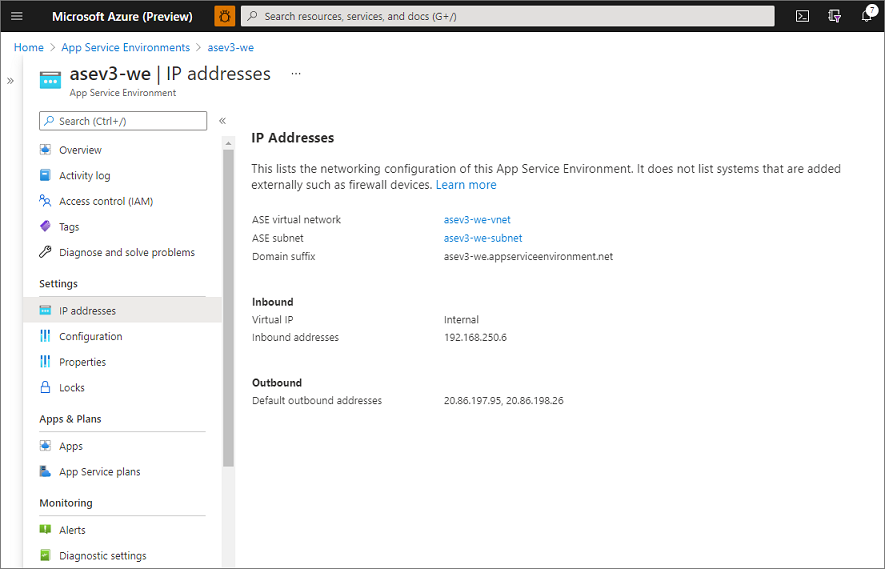
As you scale your App Service plans in your App Service Environment, you'll use more addresses from your subnet. The number of addresses you use varies based on the number of App Service plan instances you have and how much traffic there is. Apps in the App Service Environment don't have dedicated addresses in the subnet. The specific addresses an app uses in the subnet will change over time.
Availability Zone Support for App Service Environments
Azure App Service Environment can be deployed across availability zones (AZ) to help you achieve resiliency and reliability for your business-critical workloads. This architecture is also known as zone redundancy.
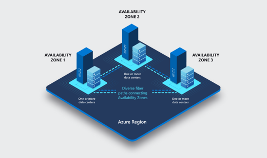
When you configure it to be zone redundant, the platform automatically spreads the instances of the Azure App Service plan across three zones in the selected region. This means that the minimum App Service Plan instance count will always be three. If you specify a capacity larger than three, and the number of instances is divisible by three, the instances are spread evenly. Otherwise, instance counts beyond 3*N are spread across the remaining one or two zones.
Prerequisites
- You configure availability zones when you create your App Service Environment.
- All App Service plans created in that App Service Environment will need a minimum of 3 instances, and those will automatically be zone redundant.
- You can only specify availability zones when creating a new App Service Environment. A pre-existing App Service Environment can't be converted to use availability zones.
- Availability zones are only supported in a subset of regions.
Downtime requirements
Downtime will be dependent on how you decide to carry out the migration. Since you can't convert pre-existing App Service Environments to use availability zones, migration will consist of a side-by-side deployment where you'll create a new App Service Environment with availability zones enabled.
Downtime will depend on how you choose to redirect traffic from your old to your new availability zone-enabled App Service Environment. For example, if you're using an Application Gateway, a custom domain, or Azure Front Door, downtime will be dependent on the time it takes to update those respective services with your new app's information. Alternatively, you can route traffic to multiple apps at the same time using a service such as Azure Traffic Manager and only fully cutover to your new availability zone-enabled apps when everything is deployed and fully tested. For more information on App Service Environment migration options, see App Service Environment migration. If you're already using App Service Environment v3, disregard the information about migration from previous versions and focus on the app migration strategies.
App Service Environment Certificates
Azure App Service provides a highly scalable, self-patching web hosting service. Once the certificate is added to your App Service app or function app, you can secure a custom Domain Name System (DNS) name with it or use it in your application code.
Note
A certificate uploaded into an app is stored in a deployment unit that is bound to the app service plan's resource group and region combination (internally called a webspace). This makes the certificate accessible to other apps in the same resource group and region combination.
The following lists are options for adding certificates in App Service:
- Create a free App Service managed certificate: A private certificate that's free of charge and easy to use if you just need to secure your custom domain in App Service.
- Purchase an App Service certificate: A private certificate that's managed by Azure. It combines the simplicity of automated certificate management and the flexibility of renewal and export options.
- Import a certificate from Key Vault: Useful if you use Azure Key Vault to manage your Public-Key Cryptography Standards #12 (PKCS12) certificates.
- Upload a private certificate: If you already have a private certificate from a third-party provider, you can upload it.
- Upload a public certificate: Public certificates are not used to secure custom domains, but you can load them into your code if you need them to access remote resources.
Prerequisites
- Create an App Service app.
- For a private certificate, make sure that it satisfies all requirements from App Service.
- Free certificate only:
- Map the domain you want a certificate for to App Service.
- For a root domain (like contoso.com), make sure your app doesn't have any IP restrictions configured. Both certificate creation and its periodic renewal for a root domain depends on your app being reachable from the internet.
Configure an app registration via the Azure portal
Note
The application registration process is constantly being updated and improved. Validate before your demo
In this exercise, we will demo how to register an application.
- In the Portal search for and select Azure Active Directory.
- Under Manage select App registrations.
-
Click New registration.
- Name: AZ500 app
- Review the Supported app types
- Select Accounts in this organizational directory only (Single tenant)
- Redirect URL > Web: https://oauth.pstmn.io/v1/browser-callback
- Click Register
- Wait for the application to register.
- On the Overview tab, review the Application (Client ID), Directory (tenant ID), and Object ID.
- Under Manage click Certificates and Secrets.
- Review the use of client secrets that an application uses to prove its identity when requesting a token.
-
Click New client secret.
-
Description: key1
- Expires: In 1 year
- Click Add
-
Wait for the application credentials to update.
Knowledge check
-
What method does Microsoft Azure App Service use to obtain credentials for users attempting to access an app?
-
Credentials are stored in the browser
- Pass-through authentication
-
Redirection to a provider endpoint (Ans)
-
What type of Managed Service Identities can you create?
-
Application-assigned and VM-assigned
- Database-assigned and unsigned
-
System-assigned and User-assigned (Ans)
-
An App Service application stores page graphics in an Azure storage account. The app needs to authenticate programmatically to the storage account, what should be configured?
-
Create an Azure AD system user
- Create a managed identity (Ans)
-
Create an RBAC role assignment
-
How does using managed identities for Azure resources change the way an app authenticates to Azure Key Vault?
-
The app gets tokens from a token service instead of Azure Active Directory. (Ans)
- The app uses a certificate to authenticate instead of a secret.
- Managed identities are automatically recognized by Azure Key Vault and authenticated automatically.
Implement storage security
Introduction
Every organization has data. That data needs to be protected at rest, in transit, and while it's being used within an application. Azure provides a set of security features to protect your data, no matter where it's located.
Scenario
A security engineer will protect data within databases, file shares, or anywhere it resides, you'll work on such tasks as:
- Lock down access to storage to specific users and applications.
- Encrypt data where it's stored and while it's moved around.
- Use identity to protect data when it's accessed and used.
Define data sovereignty
What is Data Sovereignty? - Data sovereignty is the concept that information, which has been converted and stored in binary digital form, is subject to the laws of the country or region in which it is located. Many of the current concerns that surround data sovereignty relate to enforcing privacy regulations and preventing data stored in a foreign country or region from being subpoenaed by the host country or region’s government.
In Azure, customer data might be replicated within a selected geographic area for enhanced data durability during a major data center disaster, and in some cases will not be replicated outside it.
Paired regions
Azure operates in multiple geographies around the world. An Azure geography is a defined area of the world that contains at least one Azure Region. An Azure region is an area within a geography, containing one or more datacenters.
Each Azure region is paired with another region within the same geography, forming a regional pair. The exception is Brazil South, which is paired with a region outside its geography. Across the region pairs Azure serializes platform updates (or planned maintenance), so that only one paired region is updated at a time. If an outage affecting multiple regions, one region in each pair will be prioritized for recovery.
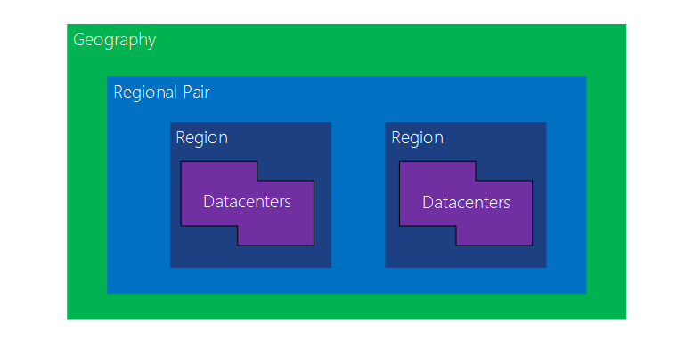
We recommend that you configure business continuity and disaster recovery (BCDR) across regional pairs to benefit from Azure’s isolation and VM policies. For applications that support multiple active regions, we recommend using both regions in a region pair where possible. Multiple regions will ensure optimal availability for applications and minimized recovery time in a disaster.
Benefits of Azure paired regions
- Physical isolation - When possible, Azure services prefer at least 300 miles of separation between datacenters in a regional pair (although longer distance isn't practical or possible in all geographies). Physical datacenter separation reduces the likelihood of both regions being affected simultaneously as a result of natural disasters, civil unrest, power outages, or physical network outages. Isolation is subject to the constraints within the geography, such as geography size, power and network infrastructure availability, and regulations.
- Platform-provided replication - Some services such as geo-redundant storage provide automatic replication to the paired region.
- Region recovery order - If a broad outage occurs, recovery of one region is prioritized out of every pair. Applications that are deployed across paired regions are guaranteed to have one of the regions recovered with priority. If an application is deployed across regions that are not paired, recovery might be delayed. In the worst case, the chosen regions might be the last two to be recovered.
- Sequential updates - Planned Azure system updates are rolled out to paired regions sequentially, not at the same time. A staged roll-out helps minimize downtime, the effect of bugs, and logical failures in the rare event of a bad update.
- Data residency - To meet data residency requirements for tax and law enforcement jurisdiction purposes, a region resides within the same geography as its pair (except for Brazil South).
Configure Azure storage access
Every request made against a secured resource in the Blob, File, Queue, or Table service must be authorized. Authorization ensures that resources in your storage account are accessible only when you want them to be, and only to those users or applications to whom you grant access.
Options for authorizing requests to Azure Storage include
- Azure AD - Azure Storage provides integration with Azure Active Directory (Azure AD) for identity-based authorization of requests to the Blob and Queue services. With Azure AD, you can use role-based access control (RBAC) to grant access to blob and queue resources to users, groups, or applications. You can grant permissions that are scoped to the level of an individual container or queue. Authorizing access to blob and queue data with Azure AD provides superior security and ease of use over other authorization options. When you use Azure AD to authorize requests make from your applications, you avoid having to store your account access key with your code, as you do with Shared Key authorization. While you can continue to use Shared Key authorization with your blob and queue applications, Microsoft recommends moving to Azure AD where possible.
- Azure Active Directory Domain Services (Azure AD DS) authorization for Azure Files. Azure Files supports identity-based authorization over Server Message Block (SMB) through Azure AD DS. You can use RBAC for fine-grained control over a client's access to Azure Files resources in a storage account
- Shared Key - Shared Key authorization relies on your account access keys and other parameters to produce an encrypted signature string that is passed on via the request in the Authorization header.
- Shared Access Signatures - A shared access signature (SAS) is a URI that grants restricted access rights to Azure Storage resources. You can provide a shared access signature to clients who should not be trusted with your storage account key but to whom you wish to delegate access to certain storage account resources. By distributing a shared access signature URI to these clients, you can grant them access to a resource for a specified period of time, with a specified set of permissions. The URI query parameters comprising the SAS token incorporate all of the information necessary to grant controlled access to a storage resource. A client who is in possession of the SAS can make a request against Azure Storage with just the SAS URI, and the information contained in the SAS token is used to authorize the request.
- Anonymous access to containers and blobs - You can enable anonymous, public read access to a container and its blobs in Azure Blob storage. By doing so, you can grant read-only access to these resources without sharing your account key, and without requiring a shared access signature (SAS).Public read access is best for scenarios where you want certain blobs to always be available for anonymous read access. For more fine-grained control, look to using the shared access signature, described above.
Authenticating and authorizing access to blob and queue data with Azure AD provides superior security and ease of use over other authorization options. For example, by using Azure AD, you avoid having to store your account access key with your code, as you do with Shared Key authorization. While you can continue to use Shared Key authorization with your blob and queue applications, Microsoft recommends moving to Azure AD where possible.
Similarly, you can continue to use shared access signatures (SAS) to grant fine-grained access to resources in your storage account, but Azure AD offers similar capabilities without the need to manage SAS tokens or worry about revoking a compromised SAS.
Important
Where possible use authorizing applications that access Azure Storage using Azure AD. It provides better security and ease of use over other authorization options.
Deploy shared access signatures
As a best practice, you shouldn't share storage account keys with external third-party applications. If these apps need access to your data, you'll need to secure their connections without using storage account keys.
For untrusted clients, use a shared access signature (SAS). A shared access signature is a string that contains a security token that can be attached to a URI. Use a shared access signature to delegate access to storage objects and specify constraints, such as the permissions and the time range of access.
You can give a customer a shared access signature token, for example, so they can upload pictures to a file system in Blob storage. Separately, you can give a web application permission to read those pictures. In both cases, you allow only the access that the application needs to do the task.
Types of shared access signatures
- You can use a service-level shared access signature to allow access to specific resources in a storage account. You'd use this type of shared access signature, for example, to allow an app to retrieve a list of files in a file system or to download a file.
- Use an account-level shared access signature to allow access to anything that a service-level shared access signature can allow, plus additional resources and abilities. For example, you can use an account-level shared access signature to allow the ability to create file systems.
- A user delegation SAS, introduced with version 2018-11-09. A user delegation SAS is secured with Azure AD credentials. This type of SAS is supported for the Blob service only and can be used to grant access to containers and blobs.
Additionally, a service SAS can reference a stored access policy that provides an additional level of control over a set of signatures, including the ability to modify or revoke access to the resource if necessary.
One would typically use a shared access signature for a service where users read and write their data to your storage account. Accounts that store user data have two typical designs:
- Clients upload and download data through a front-end proxy service, which performs authentication. This front-end proxy service has the advantage of allowing validation of business rules. But if the service must handle large amounts of data or high-volume transactions, you might find it complicated or expensive to scale this service to match demand.

- A lightweight service authenticates the client as needed. Then it generates a shared access signature. After receiving the shared access signature, the client can access storage account resources directly. The shared access signature defines the client's permissions and access interval. The shared access signature reduces the need to route all data through the front-end proxy service.
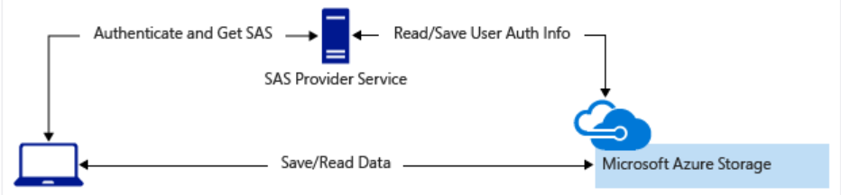
Manage Azure AD storage authentication
In addition to Shared Key and Shared Access Signatures, Azure Storage supports using Azure Active Directory (Azure AD) to authorize requests to blob data. With Azure AD, you can use Azure role-based access control (Azure RBAC) to grant permissions to a security principal, which may be a user, group, or application service principal. The security principal is authenticated by Azure AD to return an OAuth 2.0 token. The token can then be used to authorize a request against the Blob service.
- To authorize requests against Azure Storage with Azure AD provides superior security and ease of use over Shared Key authorization. Microsoft recommends using Azure AD authorization with your blob applications when possible to assure access with minimum required privileges.
- Authorization with Azure AD is available for all general-purpose and Blob storage accounts in all public regions and national clouds. Only storage accounts created with the Azure Resource Manager deployment model support Azure AD authorization.
- Blob storage additionally supports creating shared access signatures (SAS) that is signed with Azure AD credentials.
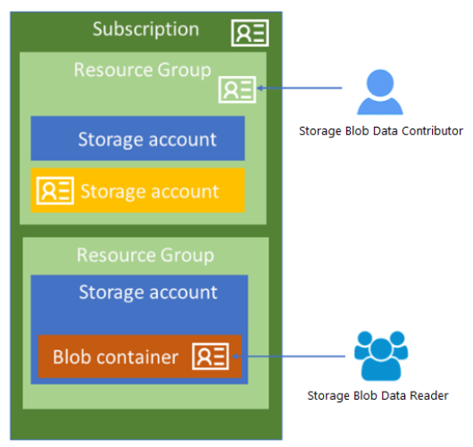
A few more details
When a security principal (a user, group, or application) attempts to access a queue resource, the request must be authorized. With Azure AD, access to a resource is a two-step process. First, the security principal's identity is authenticated, and an OAuth 2.0 token is returned. Next, the token is passed as part of a request to the Queue service and used by the service to authorize access to the specified resource.
The authentication step requires that an application request an OAuth 2.0 access token at runtime. If an application is running from within an Azure entity, such as an Azure VM, a Virtual Machine Scale Set, or an Azure Functions app, it can use a managed identity to access queues.
The authorization step requires one or more Azure roles to be assigned to the security principal. Azure Storage provides Azure roles that encompass common sets of permissions for queue data. The roles that are assigned to a security principal determine the permissions that that principal will have.
Native and web applications that request the Azure Queue service can also authorize access with Azure AD.
Implement storage service encryption
Azure Storage security is a key part to defense in depth. Azure Storage provides a comprehensive set of security capabilities that together enable developers to build secure applications:
- All data (including metadata) written to Azure Storage is automatically encrypted using Storage Service Encryption (SSE).
- Azure Active Directory (Azure AD) and Role-Based Access Control (RBAC) are supported for Azure Storage for both resource management operations and data operations, as follows:
- You can assign RBAC roles scoped to the storage account to security principals and use Azure AD to authorize resource management operations such as key management.
- Azure AD integration is supported for blob and queue data operations. You can assign RBAC roles scoped to a subscription, resource group, storage account, or an individual container or queue to a security principal or a managed identity for Azure resources.
- Data can be secured in transit between an application and Azure by using Client-Side Encryption, HTTPS, or SMB 3.0.
- OS and data disks used by Azure virtual machines can be encrypted using Azure Disk Encryption.
- Delegated access to the data objects in Azure Storage can be granted using a shared access signature.
Azure Storage encryption for data at rest
Azure Storage automatically encrypts your data when persisting it to the cloud. Encryption protects your data and to help you to meet your organizational security and compliance commitments. Data in Azure Storage is encrypted and decrypted transparently using 256-bit AES encryption, one of the strongest block ciphers available, and is FIPS 140-2 compliant. Azure Storage encryption is similar to BitLocker encryption on Windows.
Azure Storage encryption is enabled for all new and existing storage accounts and cannot be disabled. Because your data is secured by default, you don't need to modify your code or applications to take advantage of Azure Storage encryption.
Storage accounts are encrypted regardless of their performance tier (standard or premium) or deployment model (Azure Resource Manager or classic). All Azure Storage redundancy options support encryption, and all copies of a storage account are encrypted. All Azure Storage resources are encrypted, including blobs, disks, files, queues, and tables. All object metadata is also encrypted.
Encryption does not affect Azure Storage performance. There is no additional cost for Azure Storage encryption.
Encryption key management
You can rely on Microsoft-managed keys for the encryption of your storage account, or you can manage encryption with your own keys. If you choose to manage encryption with your own keys, you have two options:
- You can specify a customer-managed key to use for encrypting and decrypting all data in the storage account. A customer-managed key is used to encrypt all data in all services in your storage account.
- You can specify a customer-provided key on Blob storage operations. A client making a read or write request against Blob storage can include an encryption key on the request for granular control over how blob data is encrypted and decrypted.
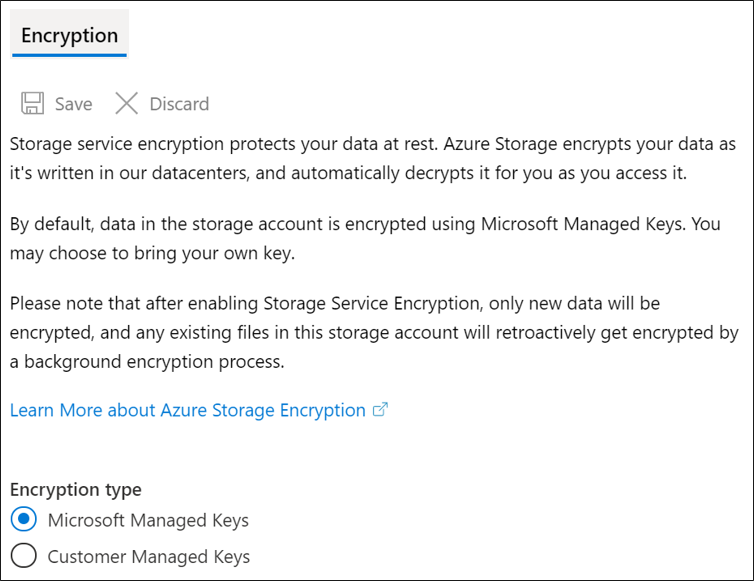
The following table compares key management options for Azure Storage encryption.
| Microsoft-managed keys | Customer-managed keys | Customer-provided keys | |
|---|---|---|---|
| Encryption/decryption operations | Azure | Azure | Azure |
| Azure Storage services supported | All | Blob storage, Azure Files | Blob storage |
| Key storage | Microsoft key store | Azure Key Vault | Azure Key Vault or any other key store |
| Key rotation responsibility | Microsoft | Customer | Customer |
| Key usage | Microsoft | Azure portal, Storage Resource Provider REST API, Azure Storage management libraries, PowerShell, CLI | Azure Storage REST API (Blob storage), Azure Storage client libraries |
| Key access | Microsoft only | Microsoft, Customer | Customer only |
Configure blob data retention policies
Immutable storage for Azure Blob storage enables users to store business-critical data objects in a WORM (Write Once, Read Many) state. This state makes the data non-erasable and non-modifiable for a user-specified interval. For the duration of the retention interval, blobs can be created and read, but cannot be modified or deleted. Immutable storage is available for general-purpose v2 and Blob storage accounts in all Azure regions.
Time-based vs Legal hold policies
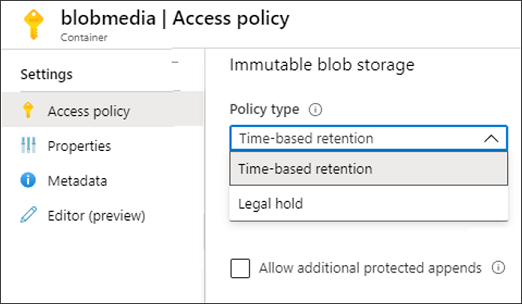
- Time-based retention policy support: Users can set policies to store data for a specified interval. When a time-based retention policy is set, blobs can be created and read, but not modified or deleted. After the retention period has expired, blobs can be deleted but not overwritten. When a time-based retention policy is applied on a container, all blobs in the container will stay in the immutable state for the duration of the effective retention period. The effective retention period for blobs is equal to the difference between the blob's creation time and the user-specified retention interval. Because users can extend the retention interval, immutable storage uses the most recent value of the user-specified retention interval to calculate the effective retention period.
- Legal hold policy support: If the retention interval is not known, users can set legal holds to store immutable data until the legal hold is cleared. When a legal hold policy is set, blobs can be created and read, but not modified or deleted. Each legal hold is associated with a user-defined alphanumeric tag (such as a case ID, event name, etc.) that is used as an identifier string. Legal holds are temporary holds that can be used for legal investigation purposes or general protection policies. Each legal hold policy needs to be associated with one or more tags. Tags are used as a named identifier, such as a case ID or event, to categorize and describe the purpose of the hold.
Other immutable storage features
- Support for all blob tiers: WORM policies are independent of the Azure Blob storage tier and apply to all the tiers: hot, cool, and archive. Users can transition data to the most cost-optimized tier for their workloads while maintaining data immutability.
- Container-level configuration: Users can configure time-based retention policies and legal hold tags at the container level. By using simple container-level settings, users can create and lock time-based retention policies, extend retention intervals, set and clear legal holds, and more. These policies apply to all the blobs in the container, both existing and new.
- Audit logging support: Each container includes a policy audit log. It shows up to seven time-based retention commands for locked time-based retention policies and contains the user ID, command type, time stamps, and retention interval. For legal holds, the log contains the user ID, command type, time stamps, and legal hold tags. This log is retained for the lifetime of the policy, in accordance with the SEC 17a-4(f) regulatory guidelines. The Azure Activity Log shows a more comprehensive log of all the control plane activities; while enabling Azure Resource Logs retains and shows data plane operations. It is the user's responsibility to store those logs persistently, as might be required for regulatory or other purposes.
Important
A container can have both a legal hold and a time-based retention policy at the same time. All blobs in that container stay in the immutable state until all legal holds are cleared, even if their effective retention period has expired. Conversely, a blob stays in an immutable state until the effective retention period expires, even though all legal holds have been cleared.
Configure Azure files authentication
Azure Files supports identity-based authentication over Server Message Block (SMB) through on-premises Active Directory Domain Services (AD DS) and Azure Active Directory Domain Services (Azure AD DS). This article focuses on how Azure file shares can use domain services, either on-premises or in Azure, to support identity-based access to Azure file shares over SMB. Enabling identity-based access for your Azure file shares allows you to replace existing file servers with Azure file shares without replacing your existing directory service, maintaining seamless user access to shares.
Azure Files enforces authorization on user access to both the share and the directory/file levels. Share-level permission assignment can be performed on Azure Active Directory (Azure AD) users or groups managed through the role-based access control (RBAC) model. With RBAC, the credentials you use for file access should be available or synced to Azure AD. You can assign built-in RBAC roles like Storage File Data SMB Share Reader to users or groups in Azure AD to grant read access to an Azure file share.
At the directory/file level, Azure Files supports preserving, inheriting, and enforcing Windows DACLs just like any Windows file servers. You can choose to keep Windows DACLs when copying data over SMB between your existing file share and your Azure file shares. Whether you plan to enforce authorization or not, you can use Azure file shares to back up ACLs along with your data.
Advantages of identity-based authentication
Identity-based authentication for Azure Files offers several benefits over using Shared Key authentication:
- Extend the traditional identity-based file share access experience to the cloud with on-premises AD DS and Azure AD DS. If you plan to lift and shift your application to the cloud, replacing traditional file servers with Azure file shares, then you may want your application to authenticate with either on-premises AD DS or Azure AD DS credentials to access file data. Azure Files supports using both on-premises AD DS or Azure AD DS credentials to access Azure file shares over SMB from either on-premises AD DS or Azure AD DS domain-joined VMs.
- Enforce granular access control on Azure file shares. You can grant permissions to a specific identity at the share, directory, or file level. For example, suppose that you have several teams using a single Azure file share for project collaboration. You can grant all teams access to non-sensitive directories while limiting access to directories containing sensitive financial data to your Finance team only.
- Back up Windows ACLs (also known as NTFS) along with your data. You can use Azure file shares to back up your existing on-premises file shares. Azure Files preserves your ACLs along with your data when you back up a file share to Azure file shares over SMB.
Identity-based authentication data flow

How it works
Azure file shares leverages Kerberos protocol for authenticating with either on-premises AD DS or Azure AD DS. When an identity associated with a user or application running on a client attempts to access data in Azure file shares, the request is sent to the domain service, either AD DS or Azure AD DS, to authenticate the identity. If authentication is successful, it returns a Kerberos token. The client sends a request that includes the Kerberos token and Azure file shares use that token to authorize the request. Azure file shares only receive the Kerberos token, not access credentials.
Preserve directory and file ACLs when importing data to Azure file shares
Azure Files supports preserving directory or file level ACLs when copying data to Azure file shares. You can copy ACLs on a directory or file to Azure file shares using either Azure File Sync or common file movement toolsets. For example, you can use robocopy with the /copy:s flag to copy data as well as ACLs to an Azure file share. ACLs are preserved by default, you are not required to enable identity-based authentication on your storage account to preserve ACLs.
Enable the secure transfer required property
You can configure your storage account to accept requests from secure connections only by setting the Secure transfer required property for the storage account. When you require secure transfer, any requests originating from an insecure connection are rejected. Microsoft recommends that you always require secure transfer for all of your storage accounts.
When secure transfer is required, a call to an Azure Storage REST API operation must be made over HTTPS. Any request made over HTTP is rejected.
Connecting to an Azure File share over SMB without encryption fails when secure transfer is required for the storage account. Examples of insecure connections include those made over SMB 2.1, SMB 3.0 without encryption, or some versions of the Linux SMB client.
By default, the Secure transfer required property is enabled when you create a storage account. Azure Storage doesn't support HTTPS for custom domain names, this option is not applied when you're using a custom domain name.
Require secure transfer for a new storage account
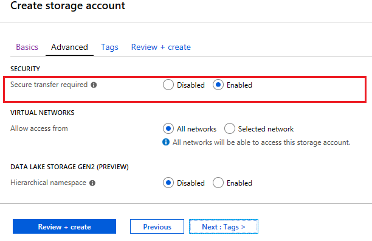
Important
Azure Files connections require encryption (SMB)
Perform Try-This exercises
Use this Try-This exercise to gain some hands-on experience with Azure.
In this demonstration, we'll explore storage security configurations.
Task 1: Generate SAS tokens
Note
This demonstration requires a storage account with a blob container and an uploaded file. For the best results, upload a PNG or JPEG file.
In this task, we'll generate and test a Shared Access Signature.
- Open the Azure portal.
- Navigate to your Storage Account.
- Under Settings, select Access keys.
- Explain how Storage Account access keys can be used. Review regenerating keys.
- Under Settings, select Shared access signature.
- Explain how an account-level SAS can be used. Review the configuration settings, including Allowed services, Allowed resource type, Allowed permissions, and Start and expiry date/times.
- Back at the Storage Account page, under Blob service, select Containers.
- Right-click the blob file that you want to share and select Generate SAS.
- Click Generate SAS token and URL.
- Copy the Blob SAS URL. There's a clipboard icon on the far right of the text box.
- Copy the URL into a browser, and your file should display.
Task 2: Key Rollover
Note
Always use the latest version of Azure Storage Explorer.
In this task, we'll use Storage Explorer to test key rollover.
- Download and install Azure Storage Explorer - https://azure.microsoft.com/features/storage-explorer/
- After the installation, launch the tool.
- Review the Release Notes and menu options.
- If this is your first time using the tool, you'll need to re-enter your credentials.
- After you've been authenticated, you can select the subscriptions of interest. Explain Storage Explorer can also be used for Local and attached accounts.
- Right-click Storage Accounts and select Connect to Azure storage. Discuss the various connection options.
- Select Use a storage account name and key.
- In the portal, select your storage account.
- Under Settings, select Access Keys. Retrieve the Storage account name and key1 key.
- In Storage Explorer, provide the account and key information, then click Connect.
- Verify that you can navigate to your storage account content.
- In the portal and your storage account.
- Under Settings, select Access Keys.
- Next to key1 click the Regenerate icon.
- Acknowledge the message that the current key will become immediately invalid and isn't recoverable.
- In Storage Explorer, refresh the storage account.
- You should receive an error that the server failed to authenticate the request.
- Reconnect so you can continue with the demonstration.
Task 3: Storage Access Policies
In this task, we'll create a blob storage access policy.
- In the Portal, navigate to your Blob container.
- Under Settings, select Access Policy.
- Review the two policies: Storage access policies and Blob immutable storage.
- Under Stored access polices click Add policy.
- Create a policy with Read and List permissions and usable for a restricted period of time.
- Under Blob immutable storage, click Add policy.
- Review the two policy types: Time-based retention and Legal hold.
- Create a policy based on time-based retention.
- Be sure to Save your changes.
- In Storage Explorer, right-click your container and select Get shared access signature.
- The Access Policy drop-down enables you to create a SAS based on a pre-defined configuration.
- As you have time, show how Storage Explorer can be used to perform security tasks.
Task 4: Azure AD User Account Authentication
In this task, we will configure Azure AD user account authentication for storage.
- In the portal, navigate to and select your blob container.
- Notice at the top the authentication method. There are two choices: Access key and Azure AD User Account. Explain the differences between the two methods.
- Switch to Azure AD User Account.
- You should receive an error stating you don't have access permissions.
- Click Access Control (IAM).
- Select Add role assignment.
- Select the Storage Blob Data Owner role. Discuss the other storage roles that are shown.
- Assign the role to your account and Save your changes.
- Return to the Overview blade.
- Switch to Azure AD User Account.
- Notice that you're now able to view the container.
- Take a minute to select Change access level and review the Public access level choices.
Task 5: Storage Endpoints (if you haven't already done this in the Network lesson)
Note
This task requires a storage account and virtual network with subnet. Storage Explorer is also required.
In this task, we'll secure a storage endpoint.
- In the Portal.
- Locate your storage account.
- Create a file share, and upload a file.
- Use the Shared Access Signature blade to Generate SAS and connection string.
- Use Storage Explorer and the connection string to access the file share.
- Ensure you can view your uploaded file.
- Locate your virtual network, and then select a subnet in the virtual network.
- Under Service Endpoints, view the Services drop-down and the different services that can be secured with an endpoint.
- Check the Microsoft.Storage option.
- Save your changes.
- Return to your storage account.
- Select Firewalls and virtual networks.
- Change to Selected networks.
- Add your virtual network and verify your subnet with the new service endpoint is listed.
- Save your changes.
- Return to the Storage Explorer.
- Refresh the storage account.
- Verify you can no longer access the file share.
Knowledge check
-
There is a need to provide a contingent staff employee temporary read-only access to the contents of an Azure storage account container named “Media”. It is important to grant access while adhering to the security principle of least-privilege. What should be configured?
-
Set the public access level to container.
- Generate a shared access signature (SAS) token for the container. (Ans)
-
Share the container entity tag (Etag) with the contingent staff member.
-
A company has both a development and production environment. The development environment needs time-limited access to storage. The production environment needs unrestricted access to storage resources. To configure storage access to meet the requirements, what configuration choices should be done?
-
Use shared access signatures for the development apps. And use access keys for the production apps. (Ans)
- Use shared access signatures for the production apps. Then, use access keys for the development apps.
-
Use Stored Access Policies for the production apps. Also, use Cross Origin Resource Sharing for the development apps.
-
A company is being audited. It is not known how long the audit will take, but during that time files must not be changed or removed. It is okay to read or create new files. What should be done to set this up?
-
Add a time-based retention policy to the blob container. And create a tag to identify items being protected.
- Add legal hold retention policy to the blob container. Also, identify a tag for the items that are being protected. (Ans)
-
Configure a retention time period of two weeks with an option to renew. Then, add a time-based retention policy to the blob container.
-
Which statements are factual when configuring an Azure file share for a business group?
-
Azure Files can authenticate to Azure Active Directory Domain Services. (Ans)
- Azure Files cannot authenticate to on-premises Active Directory Domain Services.
-
Azure Files can use RBAC for share-level or directory/file permissions.
-
When configuring Secure transfer, the Compliance office wants to understand how connections are secured when REST API operational calls are made to an Azure Storage account. What information would be provided?
-
Requests to storage can be HTTPS or HTTP.
- Requests to storage must be SMB with data access flag enabled.
- By default, new storage accounts have secure transfer required enabled. (Ans)
Configure and manage SQL database security#
Configure SQL database firewalls
Start your database security process by configuring a SQL Database firewall.
Azure SQL Database and Azure Synapse Analytics, previously SQL Data Warehouse, (both referred to as SQL Database in this lesson) provide a relational database service for Azure and other internet-based applications. To help protect your data, firewalls prevent all access to your database server until you specify which computers have permission. The firewall grants access to databases based on the originating IP address of each request.
In addition to IP rules, the firewall also manages virtual network rules. Virtual network rules are based on virtual network service endpoints. Virtual network rules might be preferable to IP rules in some cases.
Overview
Initially, all access to your Azure SQL Database is blocked by the SQL Database firewall. To access a database server, you must specify one or more server-level IP firewall rules that enable access to your Azure SQL Database. Use the IP firewall rules to specify which IP address ranges from the internet are allowed, and whether Azure applications can attempt to connect to your Azure SQL Database.
To selectively grant access to just one of the databases in your Azure SQL Database, you must create a database-level rule for the required database. Specify an IP address range for the database IP firewall rule that is beyond the IP address range specified in the server-level IP firewall rule, and ensure that the IP address of the client falls in the range specified in the database-level rule.
Note
Azure Synapse Analytics only supports server-level IP firewall rules, and not database-level IP firewall rules.
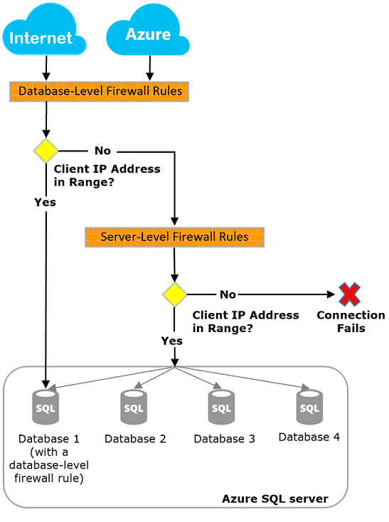
Connecting from the internet
When a computer attempts to connect to your database server from the internet, the firewall first checks the originating IP address of the request against the database-level IP firewall rules for the database that the connection is requesting:
- If the IP address of the request is within one of the ranges specified in the database-level IP firewall rules, the connection is granted to the SQL Database containing the rule.
- If the IP address of the request is not within one of the ranges specified in the database-level IP firewall rules, the firewall checks the server-level IP firewall rules. If the IP address of the request is within one of the ranges specified in the server-level IP firewall rules, the connection is granted. Server-level IP firewall rules apply to all SQL databases on the Azure SQL Database.
- If the IP address of the request is not within the ranges specified in any of the database-level or server-level IP firewall rules, the connection request fails.
Connecting from Azure
To allow applications from Azure to connect to your Azure SQL Database, Azure connections must be enabled. When an application from Azure attempts to connect to your database server, the firewall verifies that Azure connections are allowed. A firewall setting with starting and ending addresses equal to 0.0.0.0 indicates Azure connections are allowed. If the connection attempt is not allowed, the request does not reach the Azure SQL Database server.
This option configures the firewall to allow all connections from Azure including connections from the subscriptions of other customers. When selecting this option, make sure your sign-in and user permissions limit access to authorized users only.
Server-level IP firewall rules
Server-level IP firewall rules enable clients to access your entire Azure SQL Database—that is, all the databases within the same SQL Database server. These rules are stored in the master database.
You can configure server-level IP firewall rules using the Azure portal, PowerShell, or by using Transact-SQL statements. To create server-level IP firewall rules using the Azure portal or PowerShell, you must be the subscription owner or a subscription contributor. To create a server-level IP firewall rule using Transact-SQL, you must connect to the SQL Database instance as the server-level principal login or the Azure Active Directory (Azure AD) administrator (which means that a server-level IP firewall rule must have first been created by a user with Azure-level permissions).
Database-level IP firewall rules
Database-level IP firewall rules enable clients to access certain secure databases within the same SQL Database server. You can create these rules for each database (including the master database), and they are stored in the individual databases. You can only create and manage database-level IP firewall rules for master databases and user databases by using Transact-SQL statements, and only after you have configured the first server-level firewall. If you specify an IP address range in the database-level IP firewall rule that is outside the range specified in the server-level IP firewall rule, only those clients that have IP addresses in the database-level range can access the database. You can have a maximum of 128 database-level IP firewall rules for a database.
Important
Whenever possible, as a best practice, use database-level IP firewall rules to enhance security and to make your database more portable. Use server-level IP firewall rules for administrators and when you have several databases with the same access requirements, and you don't want to spend time configuring each database individually.
Enable and monitor database auditing
Auditing for Azure SQL Database and Azure Synapse Analytics tracks database events and writes them to an audit log in your Azure storage account, Log Analytics workspace or Event Hubs.
Auditing also:
- Helps you maintain regulatory compliance, understand database activity, and gain insight into discrepancies and anomalies that could indicate business concerns or suspected security violations.
- Enables and facilitates adherence to compliance standards, although it doesn't guarantee compliance.
Overview
You can use SQL database auditing to:
- Retain an audit trail of selected events. You can define categories of database actions to be audited.
- Report on database activity. You can use pre-configured reports and a dashboard to get started quickly with activity and event reporting.
- Analyze reports. You can find suspicious events, unusual activity, and trends.
Define server-level vs. database-level auditing policy
An auditing policy can be defined for a specific database or as a default server policy:
- A server policy applies to all existing and newly created databases on the server.
- If server auditing is enabled, it always applies to the database. The database will be audited, regardless of the database auditing settings.
- Enabling auditing on the database or data warehouse, in addition to enabling it on the server, does not override or change any of the settings of the server auditing. Both audits will exist side by side. In other words, the database is audited twice in parallel; once by the server policy and once by the database policy.
Shown below is the configuration of auditing using the Azure portal.
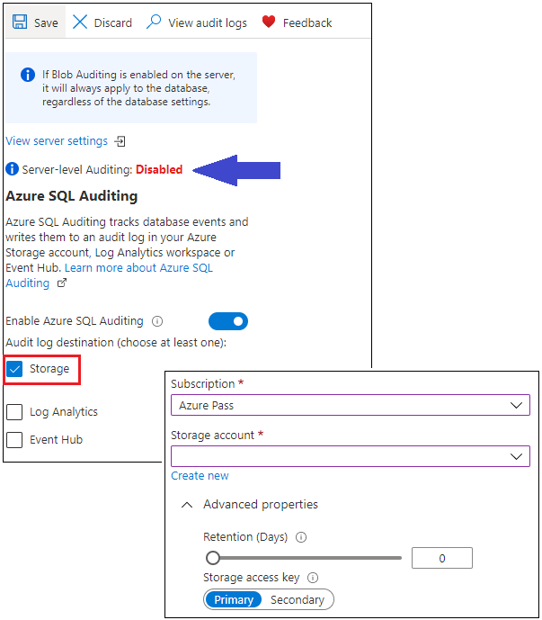
Summary of database auditing
- Retain an audit trail of selected events
- Report on database activity and analyze results
- Configure policies for the server or database level
- Configure audit log destination
- A new server policy applies to all existing and newly created databases
Implement data discovery and classification
Data Discovery & Classification is built into Azure SQL Database. It provides advanced capabilities for discovering, classifying, labeling, and reporting the sensitive data in your databases.
Your most sensitive data might include business, financial, healthcare, or personal information. Discovering and classifying this data can play a pivotal role in your organization's information-protection approach. It can serve as infrastructure for:
- Helping to meet standards for data privacy and requirements for regulatory compliance.
- Various security scenarios, such as monitoring (auditing) and alerting on anomalous access to sensitive data.
- Controlling access to and hardening the security of databases that contain highly sensitive data.
Data Discovery & Classification is part of the Advanced Data Security offering, which is a unified package for advanced SQL security capabilities. You can access and manage Data Discovery & Classification via the central SQL Advanced Data Security section of the Azure portal.
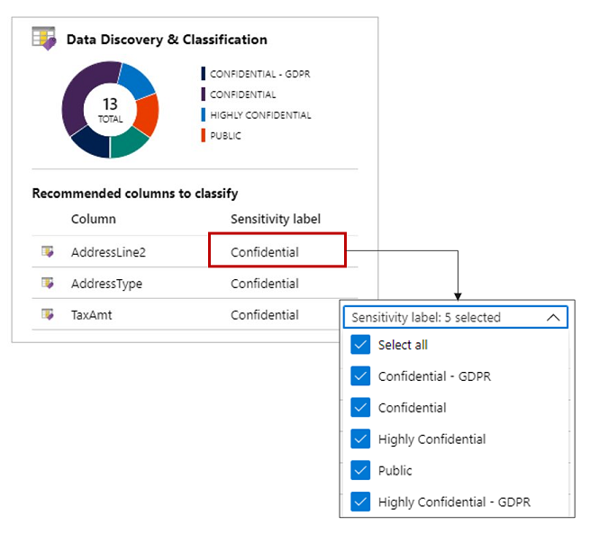
Classifying your data and identifying your data protection needs helps you select the right cloud solution for your organization. Data classification enables organizations to find storage optimizations that might not be possible when all data is assigned the same value. Classifying (or categorizing) stored data by sensitivity and business impact helps organizations determine the risks associated with the data. After your data has been classified, organizations can manage their data in ways that reflect their internal value instead of treating all data the same way.
Data classification can yield benefits such as compliance efficiencies, improved ways to manage the organization’s resources, and facilitation of migration to the cloud. Some data protection solutions—such as encryption, rights management, and data loss prevention—have moved to the cloud and can help mitigate cloud risks. However, organization must be sure to address data classification rules for data retention when moving to the cloud.
Data exists in one of three basic states: at rest, in process, and in transit. All three states require unique technical solutions for data classification, but the applied principles of data classification should be the same for each. Data that is classified as confidential needs to stay confidential when at rest, in process, or in transit.
Data can also be either structured or unstructured. Typical classification processes for structured data found in databases and spreadsheets are less complex and time-consuming to manage than those for unstructured data such as documents, source code, and email. Generally, organizations will have more unstructured data than structured data.
Regardless of whether data is structured or unstructured, it’s important for organizations to manage data sensitivity. When properly implemented, data classification helps ensure that sensitive or confidential data assets are managed with greater oversight than data assets that are considered public distribution.
Protect data at rest
Data encryption at rest is a mandatory step toward data privacy, compliance, and data sovereignty.
| Best practice | Solution |
|---|---|
| Apply disk encryption to help safeguard your data. | Use Microsoft Azure Disk Encryption, which enables IT administrators to encrypt both Windows infrastructure as a service (IaaS) and Linux IaaS virtual machine (VM) disks. Disk encryption combines the industry-standard BitLocker feature and the Linux DM-Crypt feature to provide volume encryption for the operating system (OS) and the data disks. Azure Storage and Azure SQL Database encrypt data at rest by default, and many services offer encryption as an option. You can use Azure Key Vault to maintain control of keys that access and encrypt your data. |
| Use encryption to help mitigate risks related to unauthorized data access. | Encrypt your drives before you write sensitive data to them. |
| Organizations that don’t enforce data encryption are risk greater exposure to data-integrity issues. For example, unauthorized users or malicious hackers might steal data in compromised accounts or gain unauthorized access to data coded in Clear Format. To comply with industry regulations, companies also must prove that they are diligent and using correct security controls to enhance their data security. |
Protect data in transit
Protecting data in transit should be an essential part of your data protection strategy. Because data is moving back and forth from many locations, we generally recommend that you always use SSL/TLS protocols to exchange data across different locations. In some circumstances, you might want to isolate the entire communication channel between your on-premises and cloud infrastructures by using a VPN.
For data moving between your on-premises infrastructure and Azure, consider appropriate safeguards such as HTTPS or VPN. When sending encrypted traffic between an Azure virtual network and an on-premises location over the public internet, use Azure VPN Gateway.
The following table lists best practices specific to using Azure VPN Gateway, SSL/TLS, and HTTPS.
| Best practice | Solution |
|---|---|
| Secure access from multiple workstations located on-premises to an Azure virtual network | Use site-to-site VPN. |
| Secure access from an individual workstation located on-premises to an Azure virtual network | Use point-to-site VPN. |
| Move larger data sets over a dedicated high-speed wide area network (WAN) link | Use Azure ExpressRoute. If you choose to use ExpressRoute, you can also encrypt the data at the application level by using SSL/TLS or other protocols for added protection. |
| Interact with Azure Storage through the Azure portal | All transactions occur via HTTPS. You can also use Storage REST API over HTTPS to interact with Azure Storage and Azure SQL Database. |
Organizations that fail to protect data in transit are more susceptible to man-in-the-middle attacks, eavesdropping, and session hijacking. These attacks can be the first step in gaining access to confidential data.
Now that we’ve covered the physical aspects of data classification, let’s look at the classification based on discovery and classification.
Data Discovery
Data discovery and classification provides advanced capabilities built into Azure SQL Database for discovering, classifying, labeling and protecting sensitive data (such as business, personal data, and financial information) in your databases. Discovering and classifying this data can play a pivotal role in your organizational information protection stature. It can serve as infrastructure for:
- Helping meet data privacy standards and regulatory compliance requirements.
- Addressing various security scenarios such as monitoring, auditing, and alerting on anomalous access to sensitive data.
- Controlling access to and hardening the security of databases containing highly sensitive data.
Data discovery and classification is part of the Advanced Data Security offering, which is a unified package for advanced Microsoft SQL Server security capabilities. You access and manage data discovery and classification via the central SQL Advanced Data Security portal.
Data discovery and classification introduces a set of advanced services and SQL capabilities, forming a SQL Information Protection paradigm aimed at protecting the data, not just the database:
- Discovery and recommendations - The classification engine scans your database and identifies columns containing potentially sensitive data. It then provides you with an easier way to review and apply the appropriate classification recommendations via the Azure portal.
- Labeling - Sensitivity classification labels can be persistently tagged on columns using new classification metadata attributes introduced into the SQL Server Engine. This metadata can then be utilized for advanced sensitivity-based auditing and protection scenarios.
- Query result set sensitivity - The sensitivity of the query result set is calculated in real time for auditing purposes.
- Visibility - You can view the database classification state in a detailed dashboard in the Azure portal. Additionally, you can download a report (in Microsoft Excel format) that you can use for compliance and auditing purposes, in addition to other needs.
Steps for discovery, classification, and labeling
Classifications have two metadata attributes:
- Labels - These are the main classification attributes used to define the sensitivity level of the data stored in the column.
- Information Types - These provide additional granularity into the type of data stored in the column.
SQL data discovery and classification comes with a built-in set of sensitivity labels and information types, and discovery logic. You can now customize this taxonomy and define a set and ranking of classification constructs specifically for your environment.
Definition and customization of your classification taxonomy takes place in one central location for your entire Azure Tenant. That location is in Microsoft Defender for Cloud, as part of your Security Policy. Only a user with administrative rights on the Tenant root management group can perform this task.
As part of Azure Information Protection policy management, you can define custom labels, rank them, and associate them with a selected set of information types. You can also add your own custom information types and configure them with string patterns, which are added to the discovery logic for identifying this type of data in your databases. Learn more about customizing and managing your policy in the Information Protection policy how-to guide.
After you’ve defined the tenant-wide policy, you can continue with classifying individual databases using your customized policy.
Microsoft Defender for SQL
Applies to: Azure SQL Database | Azure SQL Managed Instance | Azure Synapse Analytics
Microsoft Defender for SQL is a Defender plan in Microsoft Defender for Cloud. Microsoft Defender for SQL includes functionality for surfacing and mitigating potential database vulnerabilities and detecting anomalous activities that could indicate a threat to your database. It provides a single go-to location for enabling and managing these capabilities.
What are the benefits of Microsoft Defender for SQL?
Microsoft Defender for SQL provides a set of advanced SQL security capabilities, including SQL Vulnerability Assessment and Advanced Threat Protection.
- Vulnerability Assessment is an easy-to-configure service that can discover, track, and help you remediate potential database vulnerabilities. It provides visibility into your security state, and it includes actionable steps to resolve security issues and enhance your database fortifications.
- Advanced Threat Protection detects anomalous activities indicating unusual and potentially harmful attempts to access or exploit your database. It continuously monitors your database for suspicious activities, and it provides immediate security alerts on potential vulnerabilities, Azure SQL injection attacks, and anomalous database access patterns. Advanced Threat Protection alerts provide details of suspicious activity and recommend action on how to investigate and mitigate the threat.
Enable Microsoft Defender for SQL once to enable all these included features. With one selection, you can enable Microsoft Defender for all databases on your server in Azure or in your SQL Managed Instance. Enabling or managing Microsoft Defender for SQL settings requires belonging to the SQL security manager role or one of the database or server admin roles.
Example: Database selection options 4/4
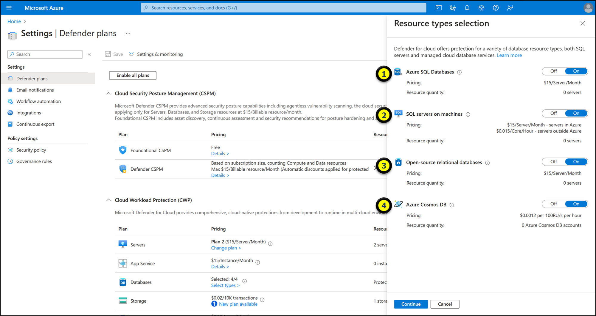
Vulnerability assessment for SQL Server
What is SQL vulnerability assessment? SQL vulnerability assessment is a service that provides visibility into your security state. Vulnerability assessment includes actionable steps to resolve security issues and enhance your database security. It can help you to monitor a dynamic database environment where changes are difficult to track and improve your SQL security posture.
Vulnerability assessment is a scanning service built into Azure SQL Database. The service employs a knowledge base of rules that flag security vulnerabilities. It highlights deviations from best practices, such as misconfigurations, excessive permissions, and unprotected sensitive data.
The rules are based on Microsoft's best practices and focus on the security issues that present the biggest risks to your database and its valuable data. They cover database-level issues and server-level security issues, like server firewall settings and server-level permissions.
The results of the scan include actionable steps to resolve each issue and provide customized remediation scripts where applicable. You can customize an assessment report for your environment by setting an acceptable baseline for:
- Permission configurations
- Feature configurations
- Database settings
SQL vulnerability assessment is an easy-to-configure service that can discover, track, and help you remediate potential database vulnerabilities. Use it to proactively improve your database security for:
- Azure SQL Database
- Azure SQL Managed Instance
- Azure Synapse Analytics
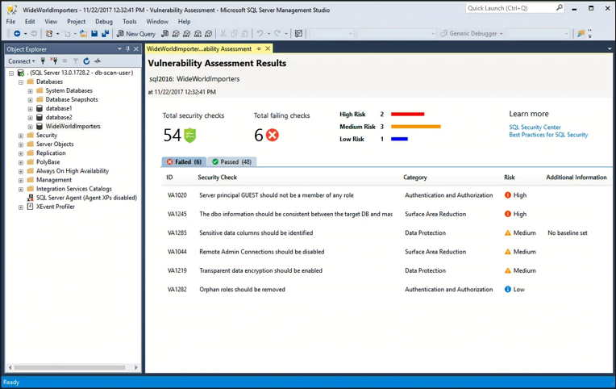
Vulnerability assessment is part of Microsoft Defender for Azure SQL, which is a unified package for advanced SQL security capabilities. Vulnerability assessment can be accessed and managed from each SQL database resource in the Azure portal.
SQL Advanced Threat Protection
Advanced Threat Protection for Azure SQL Database, Azure SQL Managed Instance, Azure Synapse Analytics, SQL Server on Azure Virtual Machines and Azure Arc-enabled SQL Server detects anomalous activities indicating unusual and potentially harmful attempts to access or exploit databases.
Advanced Threat Protection is part of the Microsoft Defender for SQL offering, which is a unified package for advanced SQL security capabilities. Advanced Threat Protection can be accessed and managed via the central Microsoft Defender for SQL portal.
Overview
Advanced Threat Protection provides a new layer of security, which enables customers to detect and respond to potential threats as they occur by providing security alerts on anomalous activities. Users receive an alert upon suspicious database activities, potential vulnerabilities, and SQL injection attacks, as well as anomalous database access and queries patterns. Advanced Threat Protection integrates alerts with Microsoft Defender for Cloud, which include details of suspicious activity and recommend action on how to investigate and mitigate the threat. Advanced Threat Protection makes it simple to address potential threats to the database without the need to be a security expert or manage advanced security monitoring systems.
For a full investigation experience, it is recommended to enable auditing, which writes database events to an audit log in your Azure storage account.
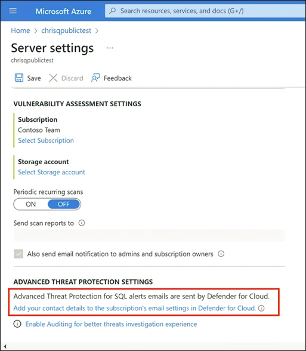
Explore detection of a suspicious event
You receive an email notification upon detection of anomalous database activities. The email provides information on the suspicious security event, including the nature of the anomalous activities, database name, server name, application name, and event time. In addition, the email provides information on possible causes and recommended actions to investigate and mitigate the potential threat to the database.
Example: Email notification providing information on a suspicious security event.
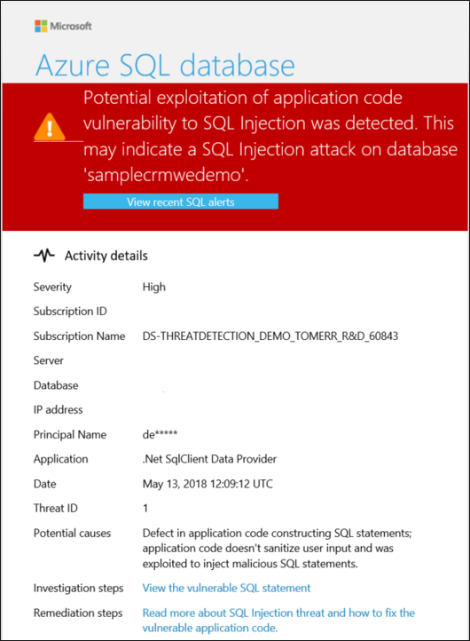
Click the View recent SQL alerts link in the email to launch the Azure portal and show the Microsoft Defender for Cloud alerts page, which provides an overview of active threats detected on the database.
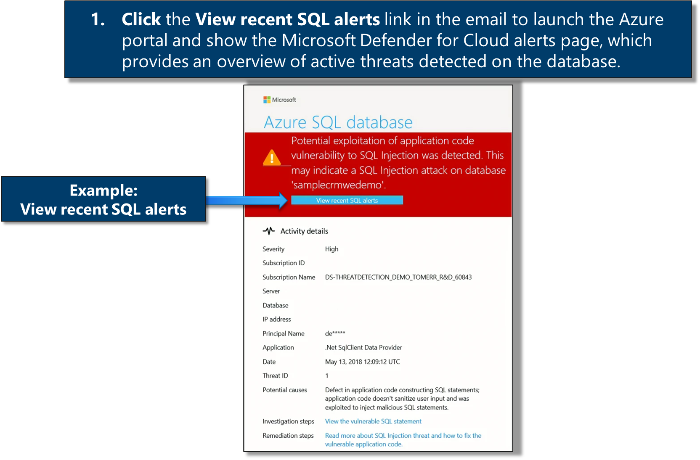
Click a specific alert to get additional details and actions for investigating this threat and remediating future threats.
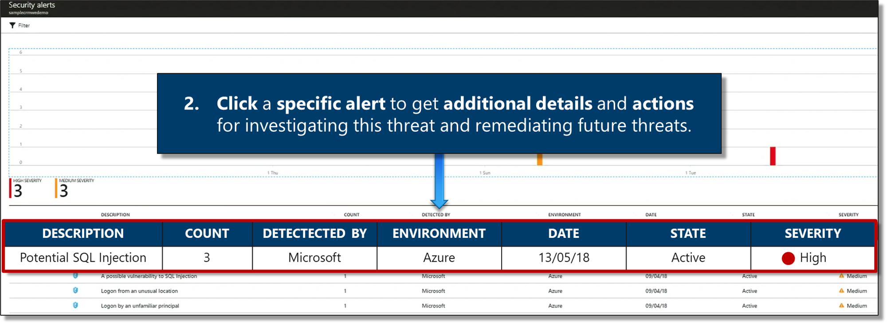
For example, SQL injection is one of the most common Web application security issues on the Internet that is used to attack data-driven applications. Attackers take advantage of application vulnerabilities to inject malicious SQL statements into application entry fields, breaching or modifying data in the database. For SQL Injection alerts, the alert's details include the vulnerable SQL statement that was exploited.
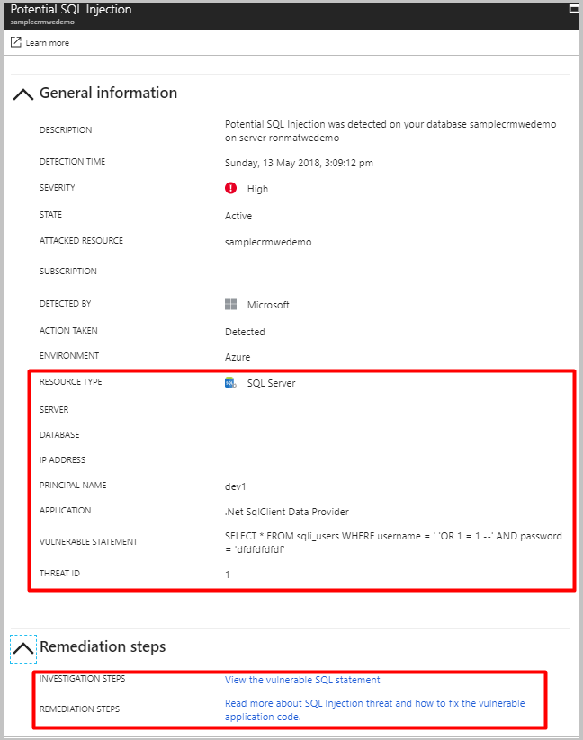
Explore alerts in the Azure portal
Advanced Threat Protection integrates its alerts with Microsoft Defender for Cloud. Live SQL Advanced Threat Protection tiles within the database and SQL Microsoft Defender for Cloud blades in the Azure portal track the status of active threats.
Click the Advanced Threat Protection alert to launch the Microsoft Defender for Cloud alerts page and get an overview of active SQL threats detected on the database.
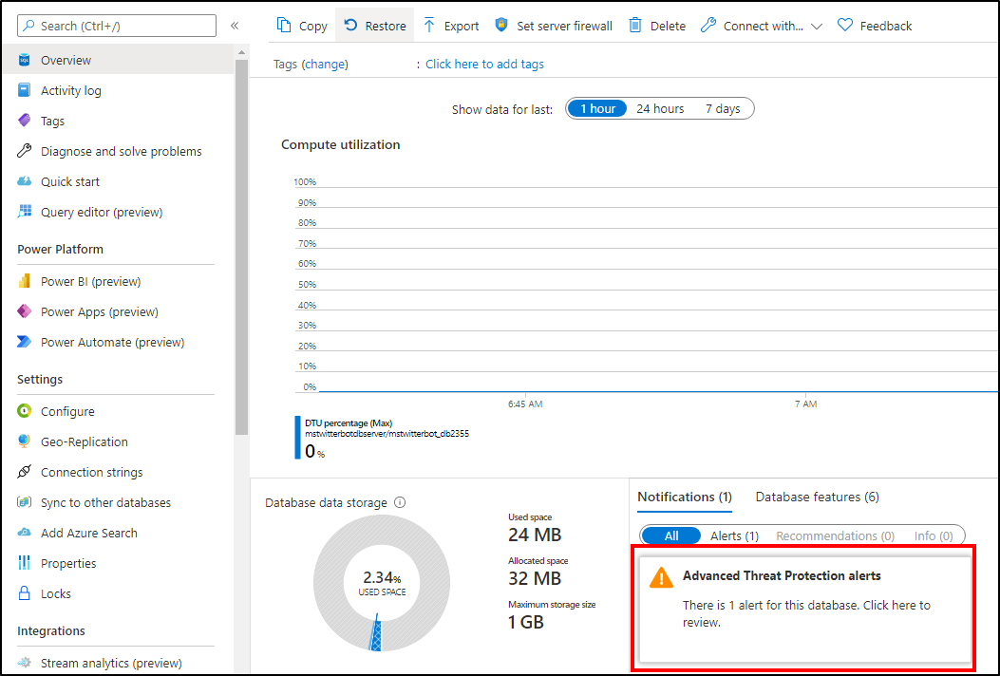
SQL vulnerability assessment express and classic configurations
What are the SQL vulnerability assessments express and classic configurations?
You can configure vulnerability assessment for your SQL databases with either:
- Express configuration (preview) – The default procedure that lets you configure vulnerability assessment without dependency on external storage to store baseline and scan result data.
- Classic configuration – The legacy procedure that requires you to manage an Azure storage account to store baseline and scan result data.
Configuration modes benefits and limitations comparison:
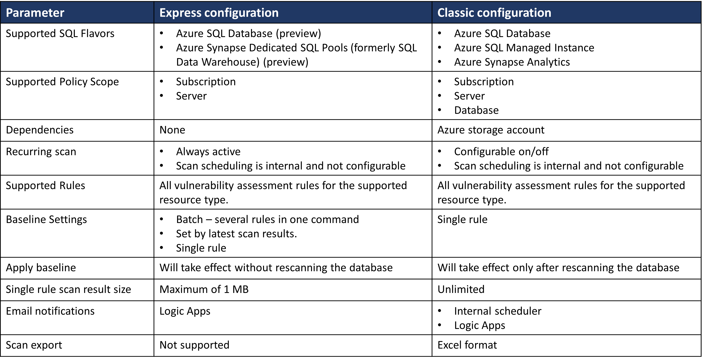
Configure dynamic data masking
SQL Database dynamic data masking (DDM) limits sensitive data exposure by masking it to non-privileged users.
Dynamic data masking helps prevent unauthorized access to sensitive data by enabling customers to designate how much of the sensitive data to reveal with minimal impact on the application layer. It’s a policy-based security feature that hides the sensitive data in the result set of a query over designated database fields, while the data in the database is not changed.
For example, a service representative at a call center may identify callers by several digits of their credit card number, but those data items should not be fully exposed to the service representative. A masking rule can be defined that masks all but the last four digits of any credit card number in the result set of any query. As another example, an appropriate data mask can be defined to protect personal data, so that a developer can query production environments for troubleshooting purposes without violating compliance regulations.
Dynamic data masking basics
You set up a dynamic data masking policy in the Azure portal by selecting the dynamic data masking operation in your SQL Database configuration blade or settings blade. This feature cannot be set by using portal for Azure Synapse
Dynamic data masking policy
- SQL users excluded from masking - A set of SQL users or Azure AD identities that get unmasked data in the SQL query results. Users with administrator privileges are always excluded from masking, and view the original data without any mask.
- Masking rules - A set of rules that define the designated fields to be masked and the masking function that is used. The designated fields can be defined using a database schema name, table name, and column name.
- Masking functions - A set of methods that control the exposure of data for different scenarios.
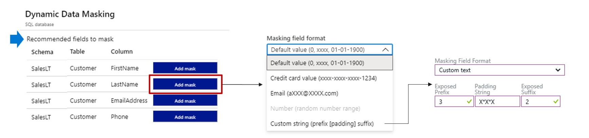
Recommended fields to mask
The DDM recommendations engine, flags certain fields from your database as potentially sensitive fields, which may be good candidates for masking. In the Dynamic Data Masking blade in the portal, you can review the recommended columns for your database. All you need to do is click Add Mask for one or more columns and then Save to apply a mask for these fields.
Implement transparent data encryption
Transparent data encryption (TDE) helps protect Azure SQL Database, Azure SQL Managed Instance, and Synapse SQL in Azure Synapse Analytics against the threat of malicious offline activity by encrypting data at rest. It performs real-time encryption and decryption of the database, associated backups, and transaction log files at rest without requiring changes to the application. By default, TDE is enabled for all newly deployed Azure SQL databases and needs to be manually enabled for older databases of Azure SQL Database, Azure SQL Managed Instance, or Azure Synapse.
TDE performs real-time I/O encryption and decryption of the data at the page level. Each page is decrypted when it's read into memory and then encrypted before being written to disk. TDE encrypts the storage of an entire database by using a symmetric key called the Database Encryption Key (DEK). On database startup, the encrypted DEK is decrypted and then used for decryption and re-encryption of the database files in the SQL Server Database Engine process. DEK is protected by the TDE protector. TDE protector is either a service-managed certificate (service-managed transparent data encryption) or an asymmetric key stored in Azure Key Vault (customer-managed transparent data encryption).
For Azure SQL Database and Azure Synapse, the TDE protector is set at the logical SQL server level and is inherited by all databases associated with that server. For Azure SQL Managed Instance (BYOK feature in preview), the TDE protector is set at the instance level and it is inherited by all encrypted databases on that instance. The term server refers both to server and instance throughout this document, unless stated differently.
Service-managed transparent data encryption
In Azure, the default setting for TDE is that the DEK is protected by a built-in server certificate. The built-in server certificate is unique for each server and the encryption algorithm used is AES 256. If a database is in a geo-replication relationship, both the primary and geo-secondary databases are protected by the primary database's parent server key. If two databases are connected to the same server, they also share the same built-in certificate. Microsoft automatically rotates these certificates in compliance with the internal security policy and the root key is protected by a Microsoft internal secret store. Customers can verify SQL Database compliance with internal security policies in independent third-party audit reports available on the Microsoft Trust Center.
Microsoft also seamlessly moves and manages the keys as needed for geo-replication and restores.
Customer-managed transparent data encryption - Bring Your Own Key
Customer-managed TDE is also referred to as Bring Your Own Key (BYOK) support for TDE. In this scenario, the TDE Protector that encrypts the DEK is a customer-managed asymmetric key, which is stored in a customer-owned and managed Azure Key Vault (Azure's cloud-based external key management system) and never leaves the key vault. The TDE Protector can be generated by the key vault or transferred to the key vault from an on premises hardware security module (HSM) device. SQL Database needs to be granted permissions to the customer-owned key vault to decrypt and encrypt the DEK. If permissions of the logical SQL server to the key vault are revoked, a database will be inaccessible, and all data is encrypted
With TDE with Azure Key Vault integration, users can control key management tasks including key rotations, key vault permissions, key backups, and enable auditing/reporting on all TDE protectors using Azure Key Vault functionality. Key Vault provides central key management, leverages tightly monitored HSMs, and enables separation of duties between management of keys and data to help meet compliance with security policies.
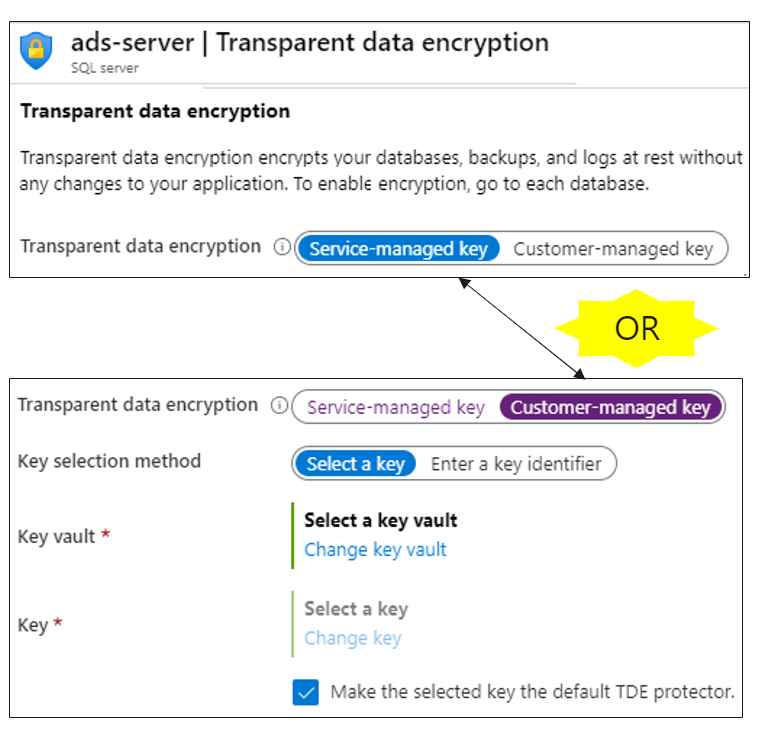
Manage TDE in the Azure portal
To configure TDE through the Azure portal, you must be connected as the Azure Owner, Contributor, or SQL Security Manager.
You turn TDE on and off on the database level. To enable TDE on a database, go to the Azure portal and sign in with your Azure Administrator or Contributor account. Find the TDE settings under your user database. By default, service-managed transparent data encryption is used. A TDE certificate is automatically generated for the server that contains the database. For Azure SQL Managed Instance use T-SQL to turn TDE on and off on a database.
Deploy always encrypted features
Ensure that your database is always encrypted.
SQL Database Always Encrypted
Always Encrypted is a feature designed to protect sensitive data, such as credit card numbers or national/regional identification numbers (for example, U.S. social security numbers), stored in Azure SQL Database or SQL Server databases. Always Encrypted allows clients to encrypt sensitive data inside client applications and never reveal the encryption keys to the Database Engine (SQL Database or SQL Server). As a result, Always Encrypted provides a separation between users who own the data (and can view it) and users who manage the data (but should have no access). By ensuring on-premises database administrators, cloud database operators, or other high-privileged, but unauthorized users, cannot access the encrypted data. Always Encrypted enables customers to confidently store sensitive data outside of their direct control. So, Always Encrypted allows organizations to encrypt data at rest and in use for storage in Azure, to enable delegation of on-premises database administration to third parties, or to reduce security clearance requirements for their own DBA staff.
Always Encrypted makes encryption transparent to applications. An Always Encrypted-enabled driver installed on the client computer achieves this by automatically encrypting and decrypting sensitive data in the client application. The driver encrypts the data in sensitive columns before passing the data to the Database Engine, and automatically rewrites queries so that the semantics to the application are preserved. Similarly, the driver transparently decrypts data, stored in encrypted database columns, contained in query results.
Example usage scenarios
Client On-Premises with Data in Azure
A customer has an on-premises client application at their business location. The application operates on sensitive data stored in a database hosted in Azure (SQL Database or SQL Server running in a virtual machine on Microsoft Azure). The customer uses Always Encrypted and stores Always Encrypted keys in a trusted key store hosted on-premises, to ensure Microsoft cloud administrators have no access to sensitive data.
Client and Data in Azure
A customer has a client application, hosted in Microsoft Azure (for example, in a worker role or a web role), which operates on sensitive data stored in a database hosted in Azure (SQL Database or SQL Server running in a virtual machine on Microsoft Azure). Although Always Encrypted does not provide complete isolation of data from cloud administrators, as both the data and keys are exposed to cloud administrators of the platform hosting the client tier, the customer still benefits from reducing the security attack surface area (the data is always encrypted in the database).
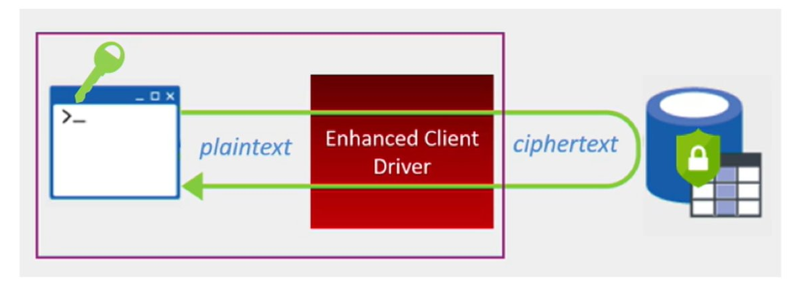
Always Encrypted Features
The Database Engine never operates on plaintext data stored in encrypted columns, but it still supports some queries on encrypted data, depending on the encryption type for the column. Always Encrypted supports two types of encryption: randomized encryption and deterministic encryption.
- Deterministic encryption always generates the same encrypted value for any given plain text value. Using deterministic encryption allows point lookups, equality joins, grouping and indexing on encrypted columns. However, it may also allow unauthorized users to guess information about encrypted values by examining patterns in the encrypted column, especially if there is a small set of possible encrypted values, such as True/False, or North/South/East/West region. Deterministic encryption must use a column collation with a binary2 sort order for character columns.
- Randomized encryption uses a method that encrypts data in a less predictable manner. Randomized encryption is more secure, but prevents searching, grouping, indexing, and joining on encrypted columns.
Use deterministic encryption for columns that will be used as search or grouping parameters, for example a government ID number. Use randomized encryption, for data such as confidential investigation comments, which are not grouped with other records and are not used to join tables.
Deploy an always encrypted implementation
A proper always encrypting implementation is important to a secure database.
Configuring Always Encrypted The initial setup of Always Encrypted in a database involves generating Always Encrypted keys, creating key metadata, configuring encryption properties of selected database columns, and/or encrypting data that may already exist in columns that need to be encrypted. Remember that some of these tasks aren't supported in Transact-SQL and require the use of client-side tools. As Always Encrypted keys and protected sensitive data are never revealed in plaintext to the server, the Database Engine can't be involved in key provisioning and perform data encryption or decryption operations. You can use SQL Server Management Studio (SSMS) or PowerShell to accomplish such tasks.
| Task | SSMS | PowerShell | SQL |
|---|---|---|---|
| Provisioning column master keys, column encryption keys and encrypted column encryption keys with their corresponding column master keys | Yes | Yes | No |
| Creating key metadata in the database | Yes | Yes | Yes |
| Creating new tables with encrypted columns | Yes | Yes | Yes |
| Encrypting existing data in selected database columns | Yes | Yes | No |
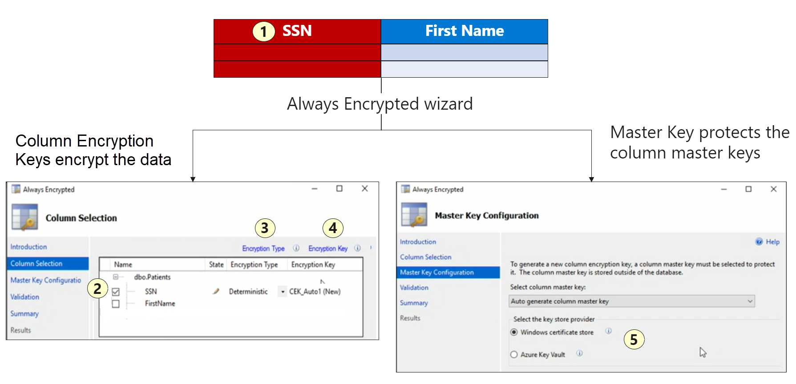
When setting up encryption for a column, you specify the information about the encryption algorithm and cryptographic keys used to protect the data in the column. Always Encrypted uses two types of keys: column encryption keys and column master keys. A column encryption key is used to encrypt data in an encrypted column. A column master key is a key-protecting key that encrypts one or more column encryption keys.
The Database Engine stores encryption configuration for each column in database metadata. Note, however, the Database Engine never stores or uses the keys of either type in plaintext. It only stores encrypted values of column encryption keys and the information about the location of column master keys, which are stored in external trusted key stores, such as Azure Key Vault, Windows Certificate Store on a client machine, or a hardware security module.
To access data stored in an encrypted column in plaintext, an application must use an Always Encrypted enabled client driver. When an application issues a parameterized query, the driver transparently collaborates with the Database Engine to determine which parameters target encrypted columns and, thus, should be encrypted. For each parameter that needs to be encrypted, the driver obtains the information about the encryption algorithm and the encrypted value of the column encryption key for the column, the parameter targets, as well as the location of its corresponding column master key.
Next, the driver contacts the key store, containing the column master key, in order to decrypt the encrypted column encryption key value and then, it uses the plaintext column encryption key to encrypt the parameter. The resultant plaintext column encryption key is cached to reduce the number of round trips to the key store on subsequent uses of the same column encryption key. The driver substitutes the plaintext values of the parameters targeting encrypted columns with their encrypted values, and it sends the query to the server for processing.
The server computes the result set, and for any encrypted columns included in the result set, the driver attaches the encryption metadata for the column, including the information about the encryption algorithm and the corresponding keys. The driver first tries to find the plaintext column encryption key in the local cache, and only makes a round to the column master key if it can't find the key in the cache. Next, the driver decrypts the results and returns plaintext values to the application.
A client driver interacts with a key store, containing a column master key, using a column master key store provider, which is a client-side software component that encapsulates a key store containing the column master key. Providers for common types of key stores are available in client-side driver libraries from Microsoft or as standalone downloads. You can also implement your own provider. Always Encrypted capabilities, including built-in column master key store providers vary by a driver library and its version.
Perform Try-This exercises
Note
These demonstrations require an Azure SQL database with sample data. In Task 1, there are instructions to install the AdventureWorks sample database. Also, Task 3 requires SQL Server Management Studio.
Task 1 - Azure SQL: Advanced Data Security and Auditing
In this task, we will explore vulnerability assessments, data discovery and classification, and auditing.
Install the AdventureWorks sample database
- In the Portal, search for and a select SQL databases.
- On the Basics tab, give your database a name, and create a new server.
- On the Additional settings tab, select Sample for Use existing data. Also, Enable advanced data security and Start free trial.
- Review & create, and then Create.
- Wait for the database to deploy.
Review Vulnerability Assessments
- Navigate to your SQL database.
- Under Security select Microsoft Defender for Cloud.
- Select Vulnerability Assessment.
- Review vulnerability assessments and the risk levels.
- Click Scan.
- The scan doesn't need to be fully complete for results to show.
- Review the Findings.
- Click any Security Check to get more details.
- Review the Passed checks.
- Notice Export Scan Results and Scan History
Review Data Discovery and Classification
- Return to the Security blade.
- Select Data Discovery & Classification.
-
On the Classification tab, select Add classification.
- Schema name: SalesLT
- Table name: Customer
- Column name: Phone
- Information type: Contact Info
- Sensitivity label: Confidential
-
When finished click Add classification.
- Click the blue bar columns with classification recommendations.
- Notice the data that has been recommended for classification.
- Select the data of interest and then click Accept selected recommendations.
- Save your changes.
Review Auditing
- Return to your SQL database.
-
Under Security select Auditing.
- Select On for auditing.
- Click Storage for the destination.
- Select on the Storage account for logs.
- Set Retention day to 45 days.
- Set storage access key to Primary.
- Save your changes.
- Discuss Server level auditing and when how it could be used.
Task 2 - Azure SQL: Diagnostics
Note
This demonstration requires an Azure SQL database.
In this task, we will review and configure SQL database diagnostics.
- In the Portal, search for and launch SQL databases.
- From the Overview blade, review the Compute utilization data graphic. Data is available for different time frames (1 hour, 24 hours, 7 days).
- Under Monitoring select Diagnostic settings.
- Click Add diagnostic setting.
- Give your setting a name.
- Under Destination details select Send to Log Analytics. Make a note of the Log Analytics workspace that will be used.
-
Under Destination details select Archive to Storage Account.
- Select the Errors log.
- Select the Automatic tuning log.
- Select the Basic metric.
- Give each item a retention time of 45 days. Retention only applies to storage account.
- Save your diagnostic setting.
- In the Portal, search for and launch the Log Analytics workspace.
- Select the workspace that is being using for your database diagnostics.
- Under General select Usage and estimated costs.
- Click Data retention. Use the slider to show how to increase the data retention time. Discuss how additional charges can incur, depending on the pricing plan.
- Under General select Workspace summary.
- Click Add and then search the Marketplace for Azure SQL. This feature may be in Preview. Explain the benefits of using this product.
- Select and then create Azure SQL Analytics.
- It will take few minutes for the product to deploy.
- Click Go to resource once the deployment is completed.
- Click Azure SQL databases.
- Review the additional metrics that are provided by this product.
- You can drill into any graphic for additional details.
Task 3 - Azure SQL: Azure AD Authentication
Note
This task requires an Azure SQL database that has not had Azure AD configured. This task also requires SQL Server Management Studio.
In this task, we will configure Azure AD authentication.
- In the Portal.
- Navigate to your SQL database.
- On the Overview page, there's an Active Directory admin box that shows the current status, configured or not configured.
- Under Settings select Active Directory admin.
- Click Set admin.
- Search for and Select the new Active Directory admin. Remember this user you'll need in following steps.
- Be sure to Save your changes.
- In SQL Server Management Studio connect to the database server using your credentials.
- Select the SQL database you configured with a new Active Directory admin.
- Construct a query to create a new user. Insert the admin user and domain. For example, user@contoso.com
- Create user [user@contoso.com] from external provider;
- Run the query and ensure it completes successfully.
- In the Object Explorer navigate your database and Security and Users folder.
- Verify that the new admin user is shown.
- Connect to the new database with the new admin credentials.
- Verify that you can successfully access the database.
Knowledge check
Choose the best response for each of the questions. Then select Check your answers.
-
An SQL database administrator has recently read about SQL injection attacks. They ask what can be done to minimize the risk of this type of attack. Implementing which of the following features will help protect the database?
-
Advanced Threat Protection (Ans)
- Data Discovery and Classification
-
Dynamic Data Masking
-
An organization provides a Help Desk for its customers. Service representatives need to identify callers using the last four numbers of their credit card. There is a need to ensure the complete credit card number isn't fully exposed to the service representatives. Which of the following features should be implemented?
-
Always Encrypted
- Data Classification
-
Dynamic Data Masking (Ans)
-
Auditors need to be assured that sensitive database data always remains encrypted at rest, in transit, and in use. To assure the auditors this is being done, which of the below features is configured?
-
Always Encrypted (Ans)
- Disk Encryption
-
Dynamic Data Masking
-
An App Service web application uses an SQL database. Users need to authenticate to the database with their Azure AD credentials. Which of the following configuration tasks would enable this?
-
Create an SQL Database Administrator
- Create an Azure AD Database Administrator
-
Create users in each database (Ans)
-
What type of firewall rules can be configured for an Azure SQL database?
-
Datacenter-level firewall rules
- Server-level firewall rules (Ans)
- Table-level firewall rules